本文比较长，收集资料颇费时间，这几天都没空上博客回复评论，抱歉 :(
前不久的“周子瑜国旗事件”引发了两岸网民的关注，甚至还出现了“小粉红远征脸书”。这期间，“小粉红”闹出很多笑话，再度体现了“傻逼都是自证的”这一名言。
如今“统独问题”再度成为网络口水战的焦点。不论你支持哪边，俺建议你：首先了解相关的背景知识，然后经过自己的独立思考和判断，最后再发表你的立场。
基于此，俺整理了这篇《简史》，供大伙儿参考。因为时间有限，错漏之处难免，欢迎批评指正。
另外，那些有志于推动天朝政治变革的网友，或许也可以从台湾民主化进程中，获得某些启发或借鉴。
甲午战争，清廷惨败，签《马关条约》，割让台湾等地。台湾从此进入“日治时期”，期间不断发生武装抗日运动。不少抗日运动同时也提出了“台湾独立”的口号。
当《马关条约》的消息传到台湾，岛内舆论哗然。当地士绅拥立台湾巡抚唐景崧为台湾民主国总统，清军驻台将领刘永福为台湾民主国大将军。这个刘永福，就是当年赫赫有名的抗法英雄，曾创立“黑旗军”。
1895年5月29日，日军在澳底（如今的新北市）登陆，与台湾军民作战，史称“乙未战争”。仅仅5天之后，驻守台北的巡抚唐景崧弃职逃往福建。驻守台南的刘永福得知后，于6月26日自立为大总统，设立议会，发行钞票以筹军饷（甚至还发行了自己的邮票）。
当时清廷封锁大陆与台湾的交通，断绝一切支援。刘永福派人向张之洞等人求援，均未获支持；又派遣总统特使告急并电中国沿海督抚乞助饷银，也无人接应。刘永福与日军苦战至10月下旬，见大势已去，乃化装偷渡回福建。10月底，日军控制台湾全境。
至此，存在约5个月的“台湾民主国”灭亡。虽然时间很短，但它早于“中华民国”，可说是中国史上第一个“共和国”。（从这里也可以看出来，“中华民国”并【不是】亚洲第一个共和国）
（台湾民主国的国旗）
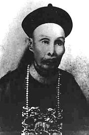
（刘永福）
“台湾民主国”灭亡后，在日本统治台湾的50多年间，发生了多起武装抗日事件。
1927年2月5日，戴季陶在黄埔军官学校演讲《孙中山先生与台湾》，其中转述了孙中山对台湾的看法，原文如下（粗体是俺标注滴）：
蒋中正在1938年的演讲《抗日战争与本党前途》中提到：
说完“国民党对台独的支持”，再来聊共产党。本小节所说的“共产党”，既包括中共，也包括当时领导中共的共产国际（第三国际）以及“台湾共产党”。
“台湾共产党”简称“台共”，由台湾青年于1928年4月15日在上海法租界成立，受第三国际领导。当时台湾为日本殖民地，依据第三国际“一国一党”的规定，由日本共产党（日共）进行指导，但当时日共因为忙于党内选举无暇派人参加，改由中共派人进行指导。
在“台共”成立大会上，中共派来的代表是彭荣。成立时颁布的党纲如下（粗体是俺标注滴）：
上述内容的出处参见维基百科（这个链接），以及如下几篇文献：
在埃德加·斯诺所写的《红星照耀中国》一书中（此书又名《西行漫记》），斯诺曾经问毛腊肉是否要从日本手中收复所有失地。以下是毛腊肉的回答（粗体是俺标注滴）：
可能有些同学对上述言论不以为然。他们觉得台湾在日本人统治下，所以支持台独是理所当然的。那么俺再举一例，让大伙儿瞧一瞧——毛泽东在二战后依然鼓吹台独，这时候的台湾早已回归。
1947年2月底，台湾发生了“二二八事件”（后面俺还会细聊此事）。不久之后的3月8日，《解放日报》发表社论，引用了毛腊肉在当时的广播讲话，内容如下（粗体是俺加的）：
严格来讲，“二二八事件”与台独运动无关。但是这次事件成为二战后台独运动的起点。
要详述“二二八事件”需要很多的篇幅，所以俺只能尽可能简述。整个事件的导火索是发生在台北的一起“私烟查缉血案”（造成一死一伤）。
事件起于2月27日，台湾省专卖局的查缉员（6人）在街头发现寡妇林江迈正在贩卖私烟，查缉员没收林妇所贩卖的香烟，以及身上所有钱物；之后又殴打林妇（以枪托击头部，至血流满面）。围观民众目睹后，愤而将查缉员包围讨公道。查缉员傅学通情急之下开枪示警，却误伤围观市民陈文溪（次日死亡）。
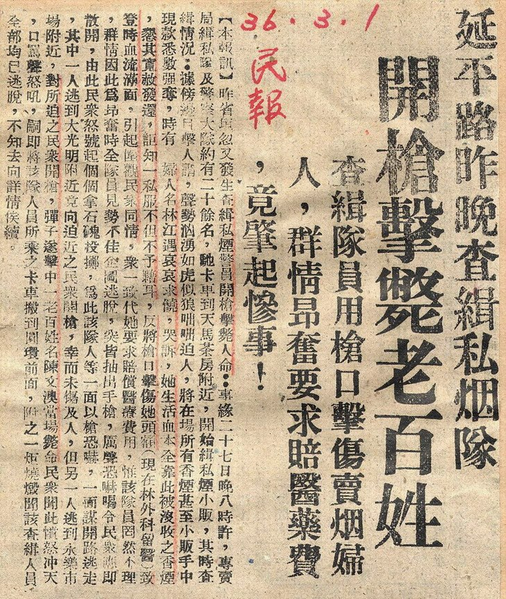
（当时《民报》的新闻报道）
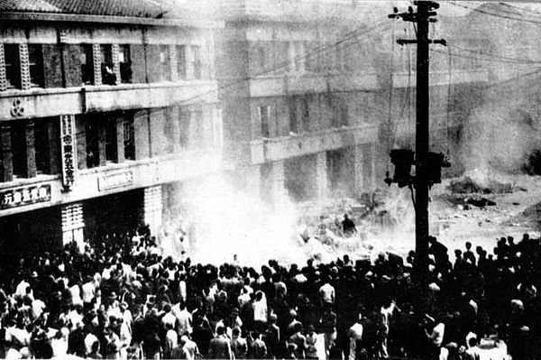
（28日上午，激愤的抗议群众包围肇祸者任职的“台湾省专卖局台北分局”）
在28日那天，除了包围“专卖局”，还有数千名台北民众集结于行政长官公署门口示威请愿。此过程中，公署卫兵无预警向市民开枪扫射，当场造成众多死伤，使得民众的情绪更为愤慨。于是事态恶化，演变为本省人对外省人的全面报复（台北各地均有外省人被殴打）。
当日下午，台湾警备司令部发现局面失控，紧急发布“临时戒严令”，并调武装军警扫荡台北市区，开枪扫射示威民众。
“戒严令”不但没有平息事态，反而导致全台湾岛的暴动。次日就有多个军械库（包括台湾最大的“红毛埤军械库”）被当地民众攻占。
台湾行政长官陈仪于3月2日发加急电报（电报原文“祈即派大军，以平怨气”），向中央求援军。3月8日，调往台湾的正规军分别从基隆港和高雄港上岸，开始在全台各个城市进行大屠杀。很多城市陷入巷战。由于实力悬殊，一周之后，各地的反抗悉数被镇压。
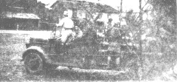
（国军使用架在消防车上的机枪进行沿路扫射。
当时服务于联合国的 Dr.M.Ottsen 在台南亲眼所见）
事情还没完。在3月26日，陈仪又发布《为实施清乡告全省民众书》，开始长达9个月的“清乡”行动。军警宪兵以“清乡”为名，挨家挨户清查户口、一旦发现可疑对象，直接逮捕（甚至就地处决）。
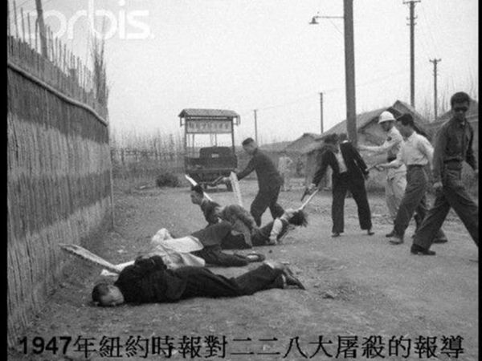
（清乡期间，被军警就地枪决的人）
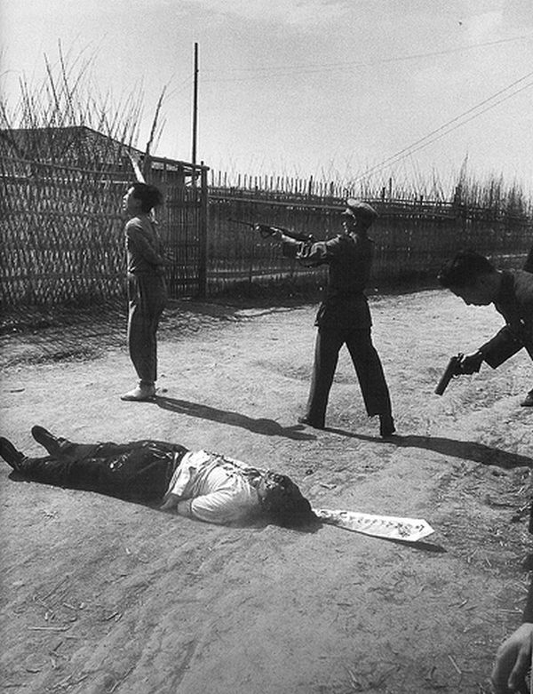
（清乡期间，被军警就地枪决的人）
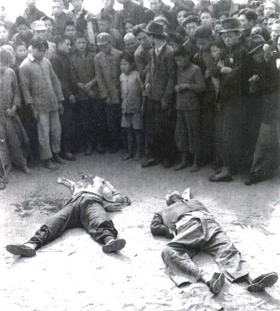
（清乡期间，被军警就地枪决的人）
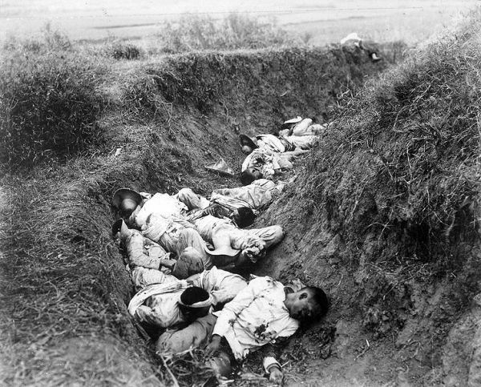
（清乡期间，被军警就地枪决的人）
这个链接是当年《纽约时报》对“二二八事件”的报道，大标题是《FORMOSA KILLINGS ARE PUT AT 10,000; Foreigners Say the Chinese Slaughtered Demonstrators Without Provocation》。
整个事件的过程中，许多台籍菁英与百姓无故被杀害，或逮捕之后不经审判而被监禁。比如台湾省参议员王添灯（本省人），被逮捕审讯、遭酷刑、最后淋汽油烧死，尸体丢入淡水河。比如国军攻占高雄市政府大楼时，楼内正有许多市参议员及社会知名人士在开会。军队见人就开枪，并往楼内丢入手榴弹。导致五、六十人当场丧命。
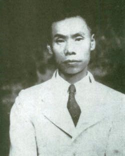
（台湾省参议员王添灯）
从表面上看，整个事件的导火索是“私烟查缉血案”。但其实捏，这里面有更深层的原因，俺转贴维基百科上的说法，大致如下：
二二八事件之后，台湾的许多民主派、自由派知识分子纷纷亡命海外。其中有不少人积极寻求台湾的自主独立，并先后在香港、日本、美国等地组成台湾独立团体。这些团体是老蒋时期台独的主要推动者。举例如下：
首先，所谓的“党外”是针对“国民党”而言。
要聊“党外运动”，有必要先简介一下台湾的“戒严时期”。话说老蒋政权从1949年开始在大陆溃败，时任台湾省政府主席兼台湾警备司令的陈诚，于1949年5月19日在台湾全境（包括澎湖群岛）进行戒严。与“戒严”配套的，就是“党禁”（禁止组党）和“报禁”（新闻审查）。
因为“党禁”的存在，所以台湾的民运人士只能以【个人身份】参与竞选。下面简单举几个例子：
说到这里，俺有必要提醒一下：目前天朝的独裁程度，不亚于老蒋的“白色恐怖”时期。你看人家台湾哪怕在白色恐怖时期，民运人士都可以参选省议员、市长、县长。而咱们天朝捏？前几年有一些维权人士以个人身份参选【基层】人大代表，你猜下场如何？坐牢的坐牢，软禁的软禁。
前面提到“党外运动”的策略之一是“以个人身份参与竞选”。除了这个策略，还有另一个策略就是“办刊物”。在老蒋时期，最有名的党外刊物大概就是雷震创办的《自由中国》。该杂志其实是在大陆时期就开始筹划的，那时候内战尚未结束，一些自由派知识分子（胡适、雷震、杭立武、张佛泉 等）认为：要坚定【反共】的合法性，就必须要有一个宣扬自由民主的刊物。由于该刊物创刊的时候，大陆已经沦陷，于是改为“仅在台湾发行”。
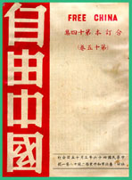
（《自由中国》杂志封面）
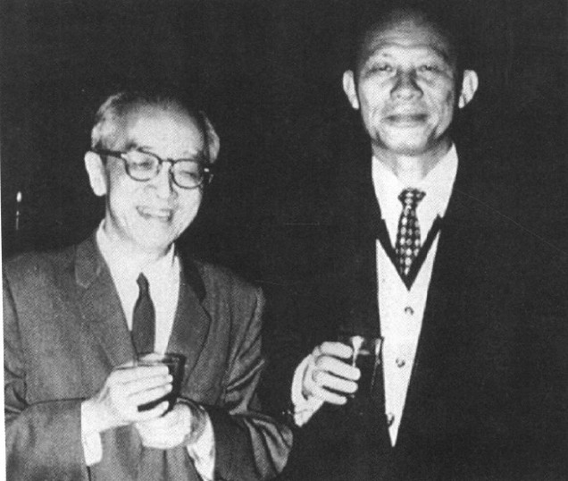
（雷震与胡适）
该刊物从1949年11月创刊，到1960年停刊，累计发行了11年。导致1960年停刊的，就是【雷震事件】。
在创办的前几年，《自由中国》一直批评老蒋搞独裁，老蒋早就视之为眼中钉。之所以一直没有取缔该杂志，主要是因为胡适担任《自由中国》的发行人。而老蒋一直比较尊重胡适，算是给他面子。
到了1960年，雷震开始筹组一个新的政党（预定党名“中国民主党”）。他并且在该年5月4日发表一篇《我们为什么迫切需要一个强有力的反对党》。显然，这个“组党”的行为已经触及了老蒋的政治底线。再加上雷震又召集台港的一些民主人士，发表联署，反对蒋介石第三次连任总统（理由是“违宪”）。老蒋终于发作了。当年9月，警备总部以“涉嫌叛乱”的罪名，将雷震、刘子英、马之骕、傅正等人逮捕。老蒋甚至下发指示“（雷震的）刑期不得少于十年”，“覆判不能变更初审判决”。由此可见，老蒋多么痛恨雷震。
当时胡适正在美国出访，回台湾后，胡适找老蒋说情，碰了一鼻子灰。
雷震关了10年，1970年刑满出狱。
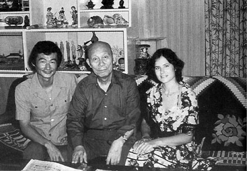
（晚年的雷震）
1970年4月18日，时任行政院副院长的蒋经国应邀赴美做为期十天的访问，以争取美国政府对国民政府的援助。
在得知蒋经国即将访美的消息后，四个“台湾独立建国联盟”的成员——赖文雄、黄文雄、郑自才（黄文雄妹夫）、黄晴美（黄文雄之妹）——决定刺杀蒋经国。因为他们在当预备役军官时都学过使用手枪，所以就买了几支手枪去山上练习。赖文雄原本提议抽签决定谁来开这一枪；黄文雄却表示由他开枪就好。因为他认为自己是四人里面唯一未婚，没有牵挂。
4月24日，蒋经国按计划到访纽约市广场饭店，纽约当地的“台独盟”成员再度举行第四次示威游行。中午时分，蒋经国的座车驶到广场饭店参加美东工商协会的餐会。他在美国警察与随从的簇拥下登上石阶，走向饭店旋转门。说时迟那时快，黄文雄突然从游行队伍中冲出，高喊：“我们是台湾，在这里清算我们的血债冤仇！”，然后拔枪射击。旁边一名美方保安反应快，迅速将黄文雄持枪的手抬高，子弹从蒋经国头顶约20公分飞过（小蒋白捡了一条命）。
然后黄文雄当场被制伏在地上。倒地后他高喊：
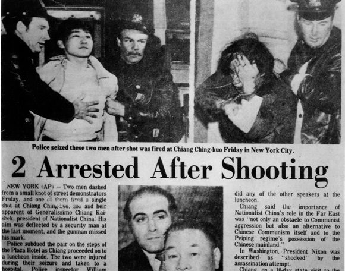
（当年美国媒体的报道——左边被押的是黄文雄，右边被押的是郑自才）
黄文雄在多年后的某次座谈会上说道：
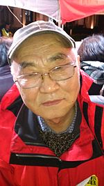
（晚年的黄文雄）
此事的深远影响
据说刺杀未遂给蒋经国很深的震撼。此事之后，他多次问身边的人：“台湾人为什么要杀我？”也是从这次事件之后，小蒋开始有意提拔台湾本省人进入政府高层。（这些被提拔的本省人里面，有一个人名叫“李登辉”）
1975年老蒋驾崩后，总统一职经由严家淦短暂过渡，1978年由小蒋接任。另外，老蒋挂掉的当月，小蒋即接任国民党主席。至此，台湾进入“蒋经国时期”。
那年进行县市长换届选举，由于国民党在桃园县长选举投票过程中作票（意为“舞弊”），引起桃园中坜区民众愤怒，并包围桃园县警察局中坜分局。之后民众捣毁并放火烧警察局、警方发射催泪瓦斯以及开枪打死多名示威的青年。
此事的意义：
中坜事件被认为是台湾民众第一次自发性地上街头抗议选举舞弊，拉开了“街头政治运动”的序幕。
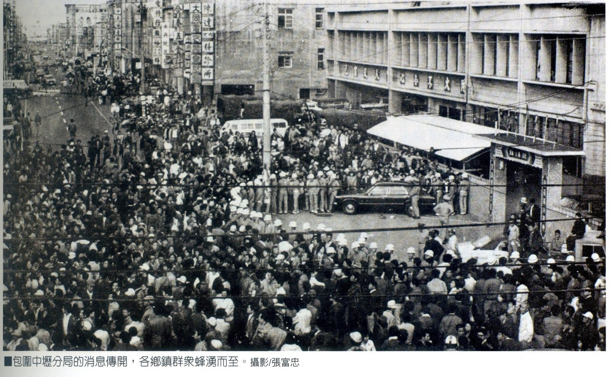
（当地民众包围中坜的警察分局）
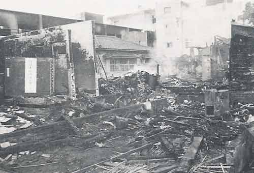
（被烧毁的警察局）

（当年民众贴出的大字报）
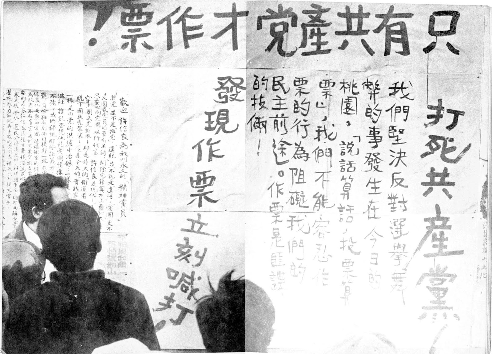
（当年民众贴出的大字报）
《美丽岛》是小蒋时期很有名的党外杂志，其影响力不亚于前面提及的《自由中国》。
“美丽岛事件”（或称“高雄事件”）是1979年12月10日（国际人权日）发生在高雄市的一场重大官民冲突。当时以“美丽岛杂志社”成员为核心的党外人士，组织群众进行示威游行，诉求民主与自由。其间发生一些小冲突，由于民众长期的积怨及国民党政府的高压政策，遂酿成严重暴力对抗。最后以国民党当局调动大批军警进行镇压而收场。此事件是台湾自“二二八事件”后规模最大的一场官民冲突。
冲突平息之后，有8名“美丽岛杂志社”的核心人员（黄信介、施明德、张俊宏、姚嘉文、林义雄、陈菊、吕秀莲、林弘宣）被定为主犯，罪名是“叛乱罪”。在这些主犯以及替他们辩护的律师团中，有好几个人后来成了湾政坛的风云人物（包括名声较臭的黑金总统陈水扁）。
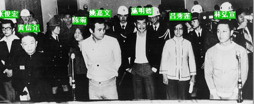
（美丽岛案件中出庭受审的主犯——这几人后来都是民进党骨干）
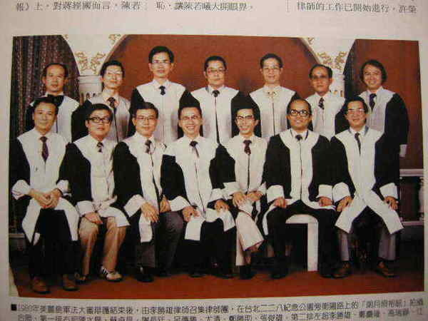
（美丽岛一案的辩护律师团——眼尖的能认出其中的阿扁。
当时谁能想到：这个青年律师后来成了黑金总统）
以下是当年冲突的现场（多图）
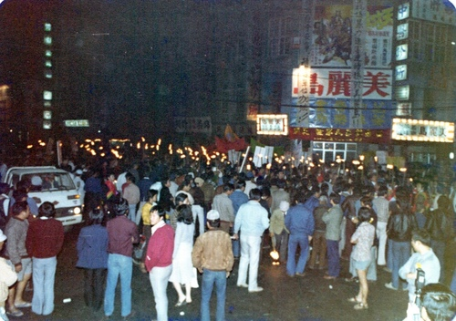 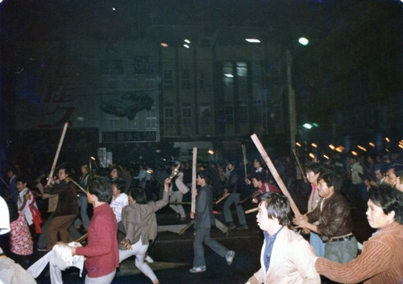 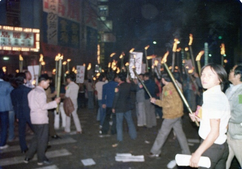 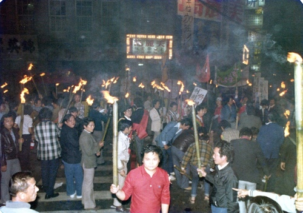 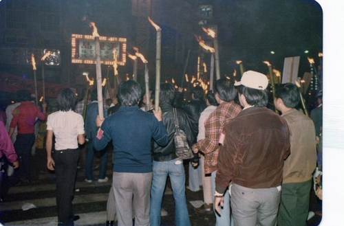 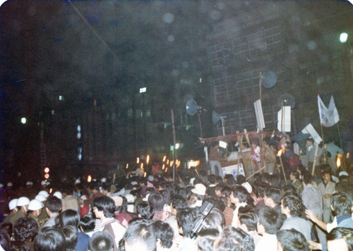 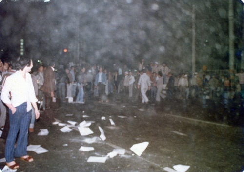 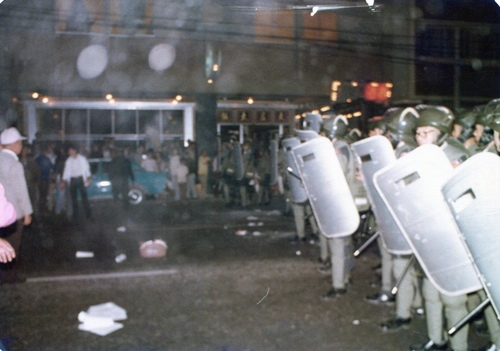 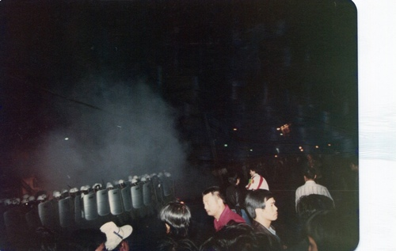 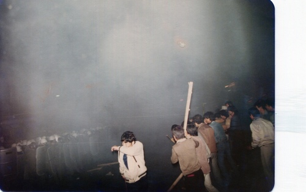 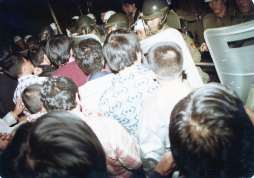 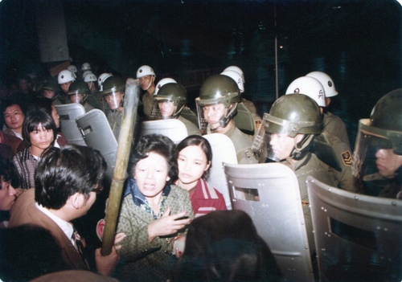 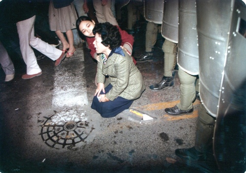
此案发生于林义雄家中。此人是台湾省议会议员、台湾民运的骨干分子。前面提到的“美丽岛事件”，被重判的八大主犯，其中就有他。
血案发生的前一周，林义雄因参与“美丽岛事件”而被军法处以“叛乱罪”起诉，关押于看守所候审。灭门案当天（2月28日），林妻方素敏去探监，侥幸躲过一劫。整个灭门案，林义雄的老母被杀（身中14刀）、两个双胞胎女儿被杀（7岁），林义雄9岁的长女重伤（身中6刀）。
此案到现在依然是【悬案】——没有查出任何头绪。
不过大部分台湾民众都把矛头指向当时国民党的情治系统。原因很简单：林义雄是台湾情治系统重点监控的人物，而且林义雄家的楼上就是“美丽岛杂志社”（这个杂志社同样是重点监控对象）。在如此严密的监控之下，一般的凶手怎么可能不留痕迹地完成灭门案，然后又不留痕迹地离开？
所以，“林宅灭门案”虽然始终未破案，但又一次重创国民党的名声。

（血案发生前不久的全家合影）
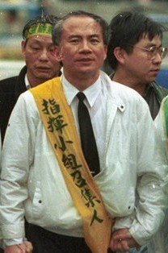
（1992年的林义雄）
陈文成当时是卡内基美隆大学统计系担任助理教授，虽然人不在台湾，但一直关注台湾的民运和人权状况，并且多次给《美丽岛》杂志捐款。
1981年5月20日，陈文成夫妇带着一岁的儿子由美国返回台湾探亲，入境台湾后，即遭到台湾警备总部调查人员的监视。同时，警备总部延迟发放陈文成的离境许可。经陈多次催促未果。一直到7月2日，陈被警总保安处约谈，之后就没有回家。第二天，他的尸体在台大研究生图书馆旁的草地上被发现。
此案与“林宅灭门案”一样，到现在都是悬案。
由于此案引发美国方面的高度关注，美方的狄格鲁教授及法医病理学家韦契特参与验尸，两人返美后，在匹兹堡举行记者会表示：
通过上述这些介绍，你会发现：此案第 N 次重创了国民党（以及蒋经国）的声誉。
“江南”是台湾知名的记者、作家刘宜良的笔名，70年代末已经加入美国国籍。
前面提到蒋经国1970年访美期间遇刺。就在遇刺之前，刘宜良刚以记者的身份采访了蒋经国。当时刘宜良正在攻读国际关系方面的博士学位，在采访之后，他开始把蒋经国列为研究课题，甚至打算以此作为毕业论文。
到了1972年，刘宜良开始在香港“南北极”杂志投稿，以“丁依”为笔名，连载“蒋经国传”。之后出版成书。
1984年8月，隶属国防部情报局的台湾竹联帮首任总堂主陈启礼率二名杀手，前往美国执行“锄奸计划”。10月15日，刘宜良被这三人暗杀（身中三枪）。
因为“江南/刘宜良”是美国公民，致使美国社会舆论哗然。美台关系跌入谷底。
那年的《时代》杂志撰文，矛头直指蒋经国政权：
本来，蒋孝武作为蒋经国次子，早在1979年（年仅34岁）就已经进入“国家安全会议”。明眼人都看出来，蒋经国重点培养蒋孝武作接班人。但是蒋孝武因此案被牵连（实际上是被张安乐诬陷，参见这个维基页面），导致名誉扫地，其仕途提前终止。假设没有此案，蒋孝武有【一定的概率】会接班。如果那样的话，就轮不到李登辉了。
关于此事的主谋，有各种说法：有说是蒋经国，也有说是汪希苓（国防部情报局局长）。至今没有定论——又是一个悬案。
关于【此案的意义】，台湾知名作家柏杨总结说：
前面俺提到持续了30年的“党外运动”。到了80年代中期，党外人士逐渐整合，并在1985年组成“党外中央选举后援会”。此时开始具备政党的雏形。1986年7月，由党外人士组成的“建党十人小组”（费希平、傅正、尤清、江鹏坚、张俊雄、周清玉、谢长廷、游锡堃、陈菊、黄尔璇），开始进行组党事宜。
1986年9月28日上午，有132人参加的“1986年党外选举后援会”在台北市圆山大饭店开会，讨论年底国民大会代表选举及立法委员选举的辅选事宜。会上，朱高正提案，要求“党外人士立即组党”。朱高正原话如下：
民进党成立的次日下午，参谋总长郝柏村提交给蒋经国的报告中称：
看到前面那段，估计会有很多读者会开始敬佩蒋经国，某些人甚至会把小蒋当成“仁慈的独裁者”。但俺不这么看。当时蒋经国没有取缔民进党，【不是】因为他的仁慈，而是因为他的精明。
从【内因】来分析：
他已经意识到——台湾的民运力量无法彻底扑灭。如果他强行取缔民进党，万一再激起一个类似“二二八”规模的暴动，小蒋不一定能收场！为啥俺这么说捏？因为1986年相比老蒋刚到台湾的1949年，已经过了将近40年。台湾军中已经有相当比例是本省人，甚至中层军官也有相当比例是本省人。国民党政权作为一个【外来政权】，其高压统治的基础已经越来越薄弱了。
从【外因】来分析：
美国作为两蒋政权的主要靠山，历经“陈文成命案/江南命案”之后，对台湾的独裁状况和人权问题越来越不满，频频向蒋经国政权施压。蒋经国可以不理会国际舆论，但他无法忽视美国国务院的脸色。
看完俺前一章节的点评，或许你就能理解——为啥小蒋会在1987年全面放开政治禁令（“解除戒严”和“解除党禁/报禁”）。
政治解禁之后，台湾各地的民主运动和独立运动，一下子就得到快速的发展。
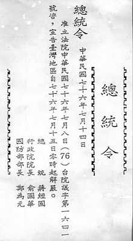
（蒋经国的总统令，宣布解除戒严）
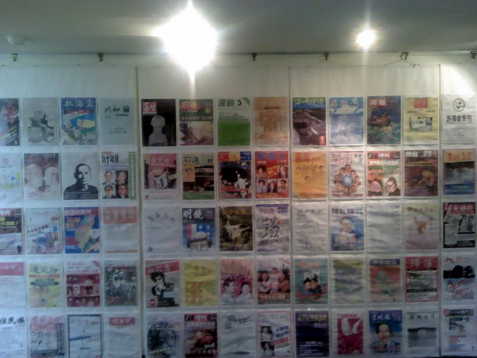
（台湾戒严时期，各种短命的“党外杂志”）
解除党禁之后，各种政治团体纷纷成立。原先流亡海外的台独人士也陆续返回。当时台独的一个口号是“岛内独立运动公开化，海外返乡运动普遍化”。很多知名的台独名人返台之后，没有重组新的政党，而是直接加入民进党，使得民进党的声势变大。
另外，民进党也从“体制外抗争”转为“议会斗争”。下图反映了民进党的“街头党”形象——图中的警察准备把静坐示威的民进党籍“国民代表”强行架走。

（民进党，又被称作“街头党”）
由于蒋经国在1988年1月突然逝世，时任副总统的李登辉接任总统，台湾进入了李登辉时期。
此事的意义在于——首位台湾【本省人】担任中华民国总统。
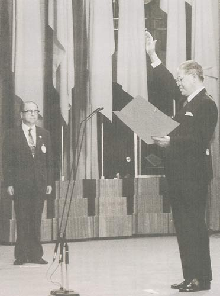
（李登辉在就任仪式上宣誓，边上那位是司法部长林洋港）
郑南榕是台湾著名的时事评论员、持不同政见者，其政治主张是：争取全面的言论自由、推动台湾民主化、推动台湾独立运动。他在1984年创办了党外杂志《自由时代周刊》，获得众多民众的支持，他也成为党外运动的知名人物。
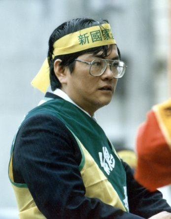
（郑南榕）
由于郑南榕长期在杂志上抨击国民党政府并鼓吹台独，1989年1月，台湾当局以“涉嫌叛乱罪”传唤他出庭。对此，他表示无法接受——他认为“鼓吹台独属于言论自由的范畴”。之后他公开宣称
1989年4月7日，台北警方向杂志社发动攻坚行动，不愿意遭到逮捕的郑南榕把自己反锁在总编办公室内，点燃汽油，自焚身亡。
目前台湾已有6个县市把4月7日定为“言论自由日”，以纪念郑南榕。
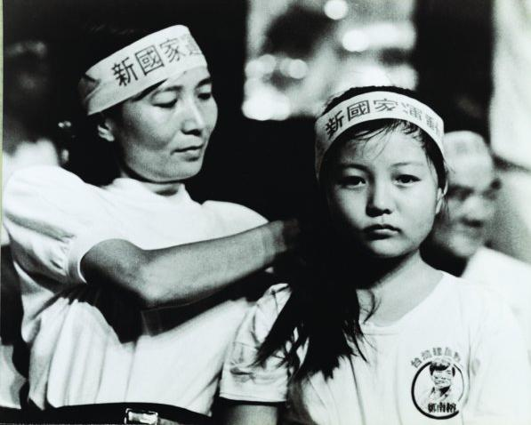
（郑南榕的妻女）
郑南榕自焚事件立刻引起岛内强烈回响。出殡期间，另一名民主运动成员詹益桦在总统府前自焚身亡。
詹益桦是民进党基层党工，台湾独立运动参与者，曾到郑南榕的《自由时代杂志》工作，积极参与各种维权运动（520农民运动）、环保运动（反核电）。
郑南榕自焚之后，詹益桦曾经说过：
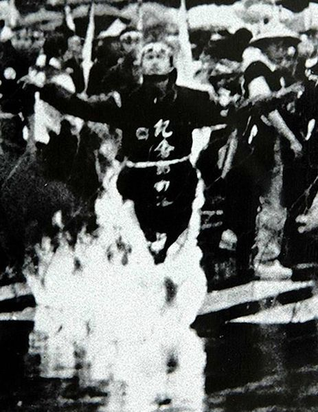
（詹益桦自焚）
此次学运发生在1990年3月16日至3月22日，又称“三月学运”。将近6000名学生占领了台北的中正纪念堂广场（如今叫“自由广场”），表达他们的诉求。学生们提出的4大诉求如下：
当时台湾的国民大会，号称“万年国会”。这个“万年国会”实际上是在1947年在全国选出来的（那年老蒋开始实施宪政）。1949年大陆沦陷之后，全体国会议员就跟着老蒋一起到了台湾。到了台湾之后捏，就无法在全国进行改选了（大陆被中共控制）。由于第一届国会是全国选出来的，老蒋把这届国会视为“法统”的象征，不能解散。于是这届国会就成了“万年国会”——连续40多年，既没有改选，也没有解散。
虽然个学运只持续了6天，但可以说是比较成功的一次学运。因为学生散场后没多久，李登辉就召开了“国是会议”（诉求第3条）；1991年，李登辉宣布结束“戡乱救国”（诉求第2条）；同样在1991年，“万年国会”终于解散了（诉求第1条）。
“野百合学运”的另一个影响是：当年参与学运的骨干分子，有很多人后来都活跃于台湾政坛（大部分加入民进党）。这批人被称为“学运世代”。
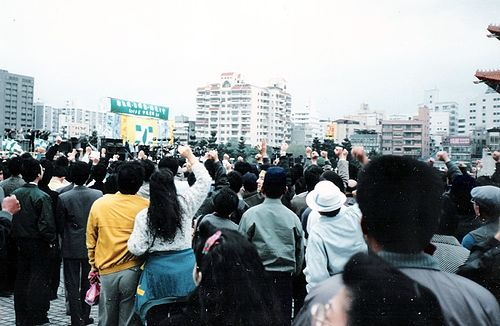
（“野百合学运”的集会现场）
这个纲领简称《国统纲领》，是当时台湾当局内政有关大陆政策的最高指导原则。如今的民进党主席蔡英文，当年也参与起草了这份纲领。（那时的蔡英文尚未加入民进党，其公职是“行政院经济部国际经济组织首席法律顾问”）
咱们来看一下这份《国统纲领》。下面俺引用纲领开篇的“四大原则”（粗体由俺标注）：
以“直接选举”的方式产生国家元首，这是台湾民主化过程中值得一提的里程碑事件。
如果算上全球华人，此次直选位于“1993年新加坡总统选举”之后，在华人地区名列第2。如果以“两岸四地”来算，则名列第1。
该年7月，李登辉在接受德国之声录影专访的时候，明确提到海峡两岸的关系，是“特殊的国与国关系”，这就是后来引发两岸口水战的“两国论”。
李登辉在卸任总统前一年出版《台湾的主张》一书，内容主要讨论“台美日关系”。书中对海峡两岸关系有两大述说：
1. 定义台湾为中华民国在台湾；
2. 分割中国为七部分（台湾、西藏、新疆、蒙古、华南、华北、东北），各自竞争发展以维持安定。
（后者就是引起轩然大波的“中国七块论”，其震动超过“两国论”）
俺个人感觉：李登辉在即将卸任总统的前一年，频频发表惊世骇俗的言论（尤其是“七块论”），或许有自我炒作的成分。另外，从他退休之后的表现，也可以看出此人是不甘寂寞的。
那年的选情扑朔迷离。简而言之，由于国民党分裂（宋楚瑜出走），最后陈水扁渔翁得利赢得大选。
于是，中华民国首次实现和平的政党轮替与权力交接。
陈水扁上台之后，连续多年一直推动“去蒋化”。这个原因很简单——民进党的骨干分子，都非常痛恨“两蒋”。
于是，台湾各地有很多的老蒋塑像被拆除并迁址（小蒋几乎没有塑像）。很多包含“中正”的地名全都改掉。比如：“中正国际机场”更名为“台湾桃园国际机场”。
“去蒋化”的过程引发了蓝绿双方大量的口水战。如果那几年你关注台湾新闻，应该会有印象。
俺的点评
陈水扁执政那几年搞的“去蒋化”活动，有些确实带有个人的小算盘（比如在关键时刻抬拉选情）。不过总体而言，俺是支持“去蒋化”的。老蒋毫无疑问是个独裁者。大凡独裁者都惯用“个人崇拜”、“神化领袖”等伎俩来强化独裁统治。而“去蒋化”，（从某种意义上）是对“神化领袖”进行反向的【祛魅】。
（关于“祛魅”这个话题，有兴趣的同学还可以看俺另一篇博文《天朝民众的心理分析：圣君情结》）
该年8月，陈水扁通过视频会议在“世界台湾同乡会第二十九届年会”上发言，陈的发言稿摘录如下：
咱们天朝的全国人大在该年3月14日通过了《反分裂国家法》。引发台湾方面的“326护台湾大游行”。此次游行的规模创纪录，凸显支持台独的民众，比例已经很高（在本文末尾，俺会列举台湾历年的民调，让你了解“统独民意”的走势）。
顺便介绍一下参与人数（以下内容摘自维基百科该条目的页面）
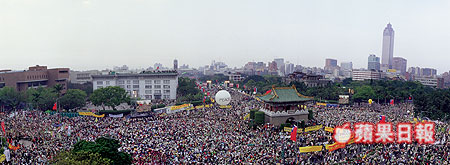
（现场航拍）
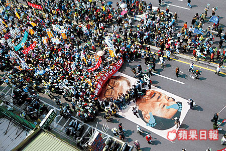
（游行民众踩踏天朝现任及前任领导人头像）
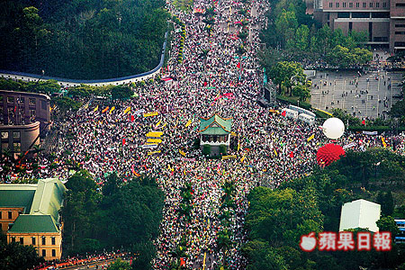
（总统府前面的景福门）
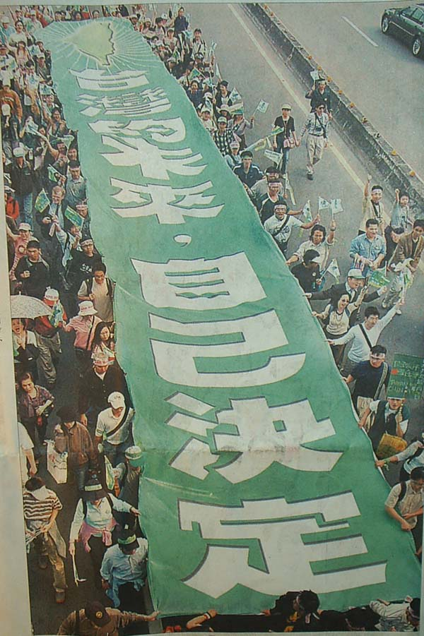
（标语
陈水扁在第二个任期内（2006年2月）宣布废除《国统纲领》和“国统会”。由于受到美国方面的压力，在对外宣布时，把“废除”改为“终止”。
陈水扁的这个举动。再次遭到中共方面的强烈批评。于是你会发现一个很有趣的现象——李登辉主持通过《国家统一纲领》，被中共痛骂为“台独”；陈水扁废除《国家统一纲领》，又被中共痛骂为“台独”。在本文的末尾，俺会全面总结一下：中共的对台政策，到底有多么傻B。
陈水扁领导的政府出了很多贪污弊案，大失民心。民进党前任主席施明德在2006年发动了一场“百万人民反贪倒扁运动”。这次运动的领导层主要为泛绿人士，而支持群众则多为泛蓝民众，被媒体称之为“绿头蓝身”现象。
此次运动历时很久，但终因红衫军领导层内哄，以及施明德所获捐款的账目不清引发社会质疑。最后无果而终。
此次运动的意义，首先是“超越蓝绿”（两边阵营都有大量参与）；其次是体现了“新公民运动”——连民进党立法院党团干事长亦承认：

（2006年中华民国国庆日，民众发动“天下围攻”）
当年的元宵节（3月4日），陈水扁出席台湾人公共事务会25周年庆祝晚宴时，发表该主张。内容是：
（俺个人比较认同这一分析）
事情的起因是：中国海协会会长陈云林访台进行第二次“江陈会谈”。期间有很多台湾民众进行抗议示威（针对陈云林）。台湾警方以维持治安的名义，粗暴对待示威的民众。促使全岛的大学生以及部分知识分子发起抗议活动（主要是“静坐及示威游行”）
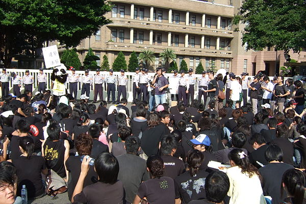
（行政院门前的静坐）
当野草莓运动迈入第六天，国民党老党员刘柏烟（79岁，50年党龄）以自焚的方式抗议马英九政府在“陈云林事件”中轻视人权与国家主权。以下是刘的遗书：
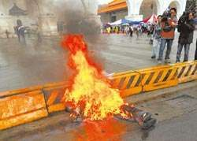
（刘柏烟在“自由广场”自焚）
后续影响：
后来影响很大的“太阳花学运”，主要的几个学生领袖（林飞帆、魏扬、陈为廷）都参与过“野草莓学运”。
此次运动的诱因之一是“旺旺集团”（咱们天朝读者应该熟知该品牌）。当2008年马英九执政后，“旺旺集团”开始进军台湾传媒业，先后收购了《中国时报》、《中天电视台》、《中国电视》等媒体，形成“旺旺中时集团”。当时已经有不少学者担心“台湾媒体财团化”，造成传媒垄断。2012年的时候，“旺旺中时集团”主席蔡衍明（此人也是“旺旺集团”老板）在接受美国记者采访时提到：【六四事件并没有人死亡】。此言论激怒了很多民运人士，尤其是身在台湾的王丹。王丹因此发起“拒绝中时运动”，余英时发表声明支持。另一个诱因是“壹传媒并购案”，“旺旺集团”再次涉足其中。几个事情累加在一起，终于激发起声势浩大的“反媒体垄断运动”。
这次运动的主要诉求是：“维护台湾新闻自由、反对媒体垄断、防止中资与台湾财团控制台湾媒体”。推动此次运动的有三方：
1. 反媒体巨兽青年联盟（总召集人是林飞帆，陈为廷是该组织成员）
2. 901反垄断联盟
3. 中央研究院部分院士与学者（比如余英时）
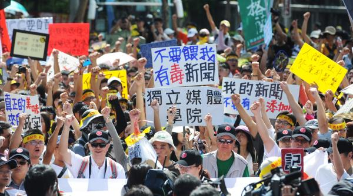
（示威集会现场的标语牌）

（示威集会现场的标语牌）
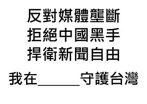
（示威集会现场的标语牌）
该年发生“洪仲丘事件”（导致士兵死亡的军队丑闻），引发了这次“白衫军运动”。 所谓“白衫”是号召参与集会的人穿“白衣”以要求“真相大白”。
整个“白衫军运动”完全是由公民自主发起、自动参与。几乎没有政党背景。运作方式：主要通过互联网（PTT论坛、Facebook）进行串联。
此次运动是台湾史上最大规模的【公民自发】的社会运动。
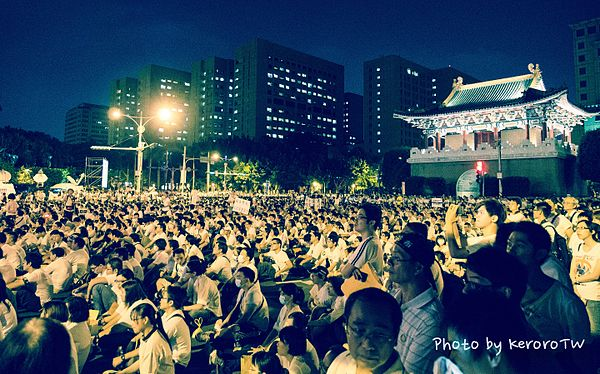
（总统府门前的白衫军）
此事的意义：
该运动促成了“军审法”于三天内修法——在和平时期，将“军人审判”从军法体系全面移至民间司法单位。
关于“太阳花学运”，俺曾经专门整理过一篇博文：《点评“台湾服贸问题”和“太阳花学运”》。考虑到本文篇幅已经很长，此处就不展开了。
花了很多口水，终于把台湾近一百多年来的民主运动和独立运动【粗略】介绍了一遍。接下来聊聊“九二共识”。
本来“九二共识”应该归入“李登辉时期”那个章节。俺把“九二共识”单独列出来，主要是因为很多天朝网民没搞明白“九二共识”到底是啥。所以单列一个章节以示强调。
李登辉主政之后，设立了一个“海基会”（海峡交流基金会），用于处理两岸交流的一些事务。名义上，“海基会”是一个民间组织；但实际上捏，它是受台湾“陆委会”（行政院大陆委员会）领导的，相当于“半官方性质”。
在大陆这边，也搞了一个类似的“海协会”（海峡两岸关系协会）。它名义上也是民间组织，实际上是受“国台办”（国务院台湾事务办公室）领导，因此也属于于“半官方性质”。
然后这两个“半官方性质”的组织，就凑到一块儿，开始谈判。谈判地点选在香港（把香港作为会谈地点，也是出于种种政治考虑）。双方谈了一个月，几乎没啥谈出啥成果。
“九二香港会谈”之后，双方的说法【不一样】：
大陆方面称：双方已达成【两岸均坚持一个中国】的共识
台湾方面称：双方已达成【一个中国，各自表述】的共识
会后，两岸都指责对方没有诚意。考虑到大部分读者是天朝网民，俺来引述一下对岸的说辞，让大伙儿综合参考，以免偏听偏信。以下内容摘自“凤凰卫视2014年6月17日的《凤凰大视野》”
“九二香港会谈”之后相当长一段时间，两岸对“九二共识”的宣传口径是不同的。台湾强调“一个中国，各自表述”，而大陆方面只强调“一个中国”，始终避而不谈“各自表述”。
一直到了胡面瘫主政时期的2008年，小胡与小布什有过一次电话会议。在这次电话会议中，胡锦涛发言的英文翻译中，首次出现【一中各表】。请注意，胡面瘫讲话的英文翻译稿，是刊登在朝廷喉舌新华网上的（链接在“这里”）俺引用其中的第3段和第4段（引文中的粗体是俺标注滴）
所谓的“一中各表”，就是对“一个中国”这个词汇，两岸可以有不同的定义和解读。大陆方面解读为“中华人民共和国”，台湾方面解读为“中华民国”。
如果你理解了“一中各表”，那么“周子瑜国旗事件”根本就算不上台独。包括前几年的“张惠妹国歌事件”、“张悬国旗事件”，都属于“一中各表”，远远【算不上】台独。
前面花了很多口水，介绍了台湾在各个时期的独立运动和民主运动。下面来介绍一下当今台湾社会对于“统独”的民意。为了尽量保持客观性，俺引述不同年代不同机构的统计数字。
下图来自台湾行政院大陆委员会，时间是：截止到2015年的历年统计（原始链接在“这里”）
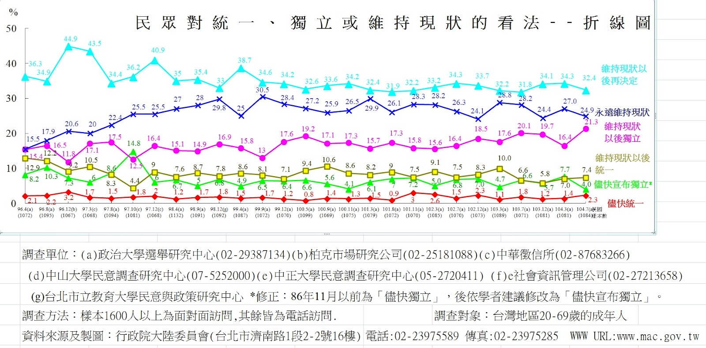
下图来自“台湾指标民调”（TISR），发表时间：2015年2月（原文链接在“这里”）
（由于提问方式可能会影响“被调查者”的回应，该民调分别采用两种【相反的】提问方式）
以下内容摘自《苹果日报》，采用的是 TVBS 的民调数据，发表时间：2013年（原始链接在“这里”）
前一个章节给出了台湾社会关于“统独”的民意调查。很明显，支持独立的民众在增长。这里面有很多原因。其中一个原因与咱们的朝廷有关。
所以，在本文最后，来聊聊中共对台政策有多么傻逼——其傻逼程度，直追网上那些脑残的爱国贼。
前面俺提到了李登辉在1991年主持通过了《国家统一纲领》。为了避免某些人过目既忘，再把前面章节转贴的内容再 copy 一次。（下面是国民党政府提出的《国家统一纲领》开篇4大原则）
说明一下：这个“促进会”在咱们天朝是一个“半官方组织”，受真理部（中宣部）指挥。其评论文章直接代表朝廷的声音。
实际上，中共方面对台湾《国家统一纲领》的狠批，极大打击了台湾岛内的统派人士的热情。而且台湾岛内的独派会嘲笑统派是“热脸贴上冷屁股”。
前面俺说了：陈水扁在第二个任期内（2006年2月）能够废除《国家统一纲领》，从某种意义上也应该感谢中共对该纲领的狠批。该纲领被废除后，即使到了马英九8年执政，也【没能】再恢复了。
当时有4对竞选搭档，分别是：
为了造势，中共方面甚至在台湾大选投票的那几天搞“飞弹试射”（导弹落点就在基隆港和高雄港的周边海域）。此举引发台海危机，其动静之大，连美国航母舰队都进驻台湾海峡（独立号航母战斗群、尼米兹号航母战斗群）。
可惜的是，选举结果大大出乎朝廷意料。李登辉获得过半票数（54.0%），彭明敏得票 21.1%，林洋港只得到可怜的 14.9%（仅相当于彭明敏票数的2/3，远不及李登辉）。
事情还没完。次年（1997）的“第13届县市长选举”中，民进党赢得12个县长/市长（数量上首次超越国民党）。并且这12个县市的总人口占全台湾总人口71.59%（这个比例已接近3/4）
可以这么说，1996年的台海导弹危机，极大地帮助了民进党，也极大地帮助了泛绿团体。
时隔20年之后，再来看看今年的总统大选。俗话说，真正愚蠢的人才会连续犯同样的错误。而咱们天朝“国台办”恰恰就是这么愚蠢。
这次台湾大选之前，出现了两个插曲，一个是众所周知的“周子瑜国旗事件”，另一个是“解放军中将王洪光威胁武力统一”。
（周子瑜道歉视频截图）
周子瑜是被黄安举报的。这个黄安，之前已经举报过多位台独人士。他举报谁，谁就被真理部封杀。显然，黄安已经成为“赵家的狗”。至于那个王洪光，本来就是衙门里面的人。没有真理部授意，他怎敢口无遮拦？
所以，这两个事件可以解读为：国台办【再度】采用“威吓”的手法企图影响2016年的总统大选。结果如何捏？台湾方面的民调机构表示——周子瑜的道歉视频，极大地帮助了蔡英文（相关报道如下）
《王尚智：周子瑜成為今日滋養蔡英文的票源 @ 中國時報》
《纽约台商会长：周子瑜事件为民进党拉50万票 @ VOA/美国之音》
事后，连咱们朝廷喉舌“海外网”（人民日报海外版）的网站也刊登文章《网民“讨伐”周子瑜 是民粹的狂欢》，文中承认说：
台湾大选当晚，黄安在新浪微博的多篇博文被删除，评论功能被关闭，大量中国大陆网民的留言神秘消失。黄安原定16日晚8点播出的凤凰卫视《一虎一席谈》节目，也改为重播旧节目。真理部已经开始把黄安的举报定性为“挑拨两岸民众感情”。
可怜的【赵家犬】黄安，因为帮了倒忙，被朝廷一脚踢开了。那些自愿当赵家走狗的人，想想黄安的下场吧。
俺博客上，和本文相关的帖子（需翻墙）：
《点评“台湾服贸问题”和“太阳花学运”》
《政治常识扫盲：理清“国家、政体、公民、政府、政党”等概念》
《分析爱国主义忽悠的常见类型——顺便戳穿几个流传很广的谣言》
《处在历史转折点的小人物们——回首80年代的几则往事》
《每周转载：关于朝廷对爱国主义的忽悠（网文5篇）》
《每周转载：关于“一国两制白皮书”和“国台办言论”（大量网友评论和图片）》
《每周转载：关于香港抗议洗脑教育（网文3篇，图片多张）》
★引子
前不久的“周子瑜国旗事件”引发了两岸网民的关注，甚至还出现了“小粉红远征脸书”。这期间，“小粉红”闹出很多笑话，再度体现了“傻逼都是自证的”这一名言。
如今“统独问题”再度成为网络口水战的焦点。不论你支持哪边，俺建议你：首先了解相关的背景知识，然后经过自己的独立思考和判断，最后再发表你的立场。
基于此，俺整理了这篇《简史》，供大伙儿参考。因为时间有限，错漏之处难免，欢迎批评指正。
另外，那些有志于推动天朝政治变革的网友，或许也可以从台湾民主化进程中，获得某些启发或借鉴。
★日治时期
甲午战争，清廷惨败，签《马关条约》，割让台湾等地。台湾从此进入“日治时期”，期间不断发生武装抗日运动。不少抗日运动同时也提出了“台湾独立”的口号。
◇“台湾民主国”和“乙未战争”
当《马关条约》的消息传到台湾，岛内舆论哗然。当地士绅拥立台湾巡抚唐景崧为台湾民主国总统，清军驻台将领刘永福为台湾民主国大将军。这个刘永福，就是当年赫赫有名的抗法英雄，曾创立“黑旗军”。
1895年5月29日，日军在澳底（如今的新北市）登陆，与台湾军民作战，史称“乙未战争”。仅仅5天之后，驻守台北的巡抚唐景崧弃职逃往福建。驻守台南的刘永福得知后，于6月26日自立为大总统，设立议会，发行钞票以筹军饷（甚至还发行了自己的邮票）。
当时清廷封锁大陆与台湾的交通，断绝一切支援。刘永福派人向张之洞等人求援，均未获支持；又派遣总统特使告急并电中国沿海督抚乞助饷银，也无人接应。刘永福与日军苦战至10月下旬，见大势已去，乃化装偷渡回福建。10月底，日军控制台湾全境。
至此，存在约5个月的“台湾民主国”灭亡。虽然时间很短，但它早于“中华民国”，可说是中国史上第一个“共和国”。（从这里也可以看出来，“中华民国”并【不是】亚洲第一个共和国）
（台湾民主国的国旗）
（刘永福）
◇持续不断的“抗日运动”及“独立运动”
“台湾民主国”灭亡后，在日本统治台湾的50多年间，发生了多起武装抗日事件。
北埔事件上述这些事件中，至少有6起提出了“台湾独立”的口号。原因很简单——台湾的抗日民众认为自己已经被清廷抛弃了，既然朝廷靠不住，那就只能靠自己独立了。
林圯埔事件
土库事件
南投陈阿荣事件
新竹大湖张火炉事件
台南关帝庙李阿齐事件
台中东势角赖来事件
苗栗事件
六甲事件
林老才事件
西来庵事件
雾台事件
◇早期国民党对“台独运动”的【支持】
1927年2月5日，戴季陶在黄埔军官学校演讲《孙中山先生与台湾》，其中转述了孙中山对台湾的看法，原文如下（粗体是俺标注滴）：
在台湾的中国同胞被日本人压迫欺侮，就像高丽人被压迫一样。因此我们鼓吹台湾独立。台湾的民族独立运动必须和命运情势相同的高丽及中国诸被压迫民族的独立运动互相联合，共同抵抗帝国主义者。
蒋中正在1938年的演讲《抗日战争与本党前途》中提到：
总理以为我们必须使高丽、台湾恢复独立自由才能巩固中华民国的国防。（老蒋所说的“总理”指的是中华民国的国父孙文）
◇共产党（共产国际、中共）对“台独运动”的【支持】
说完“国民党对台独的支持”，再来聊共产党。本小节所说的“共产党”，既包括中共，也包括当时领导中共的共产国际（第三国际）以及“台湾共产党”。
“台湾共产党”简称“台共”，由台湾青年于1928年4月15日在上海法租界成立，受第三国际领导。当时台湾为日本殖民地，依据第三国际“一国一党”的规定，由日本共产党（日共）进行指导，但当时日共因为忙于党内选举无暇派人参加，改由中共派人进行指导。
在“台共”成立大会上，中共派来的代表是彭荣。成立时颁布的党纲如下（粗体是俺标注滴）：
打倒总督专制政治 - 打倒日本帝国主义彭荣作为中共的代表【列席指导】这次成立大会。因此，上述这个“台独决议”肯定是得到中共认可的，也是共产国际认可的。
台湾民族独立
建设台湾共和国
废除压制工农的恶法
七小时劳动 - 不劳动者不得食
罢工、集会、结社、言论、出版自由
土地归于农民
打倒封建残存势力
制定失业保护法
反对暴压日、鲜无产阶级的恶法
拥护苏维埃联邦
拥护中国革命
反对新帝国主义战争
上述内容的出处参见维基百科（这个链接），以及如下几篇文献：
史明：《四百年史》，第577～583頁
許世楷：《日本統治》，第327～330頁
Hsiao and Sullivan：《CCP and Taiwan》，第456頁
◇毛泽东公开支持台独（甚至在【二战后】依然支持）
在埃德加·斯诺所写的《红星照耀中国》一书中（此书又名《西行漫记》），斯诺曾经问毛腊肉是否要从日本手中收复所有失地。以下是毛腊肉的回答（粗体是俺标注滴）：
不僅要保衛長城以南的主權，也要收復我國全部的失地。這就是說滿州必須收復。但我們並不把中國以前的殖民地朝鮮包括在內。當我們收回中國的失地達成獨立以後，如果朝鮮人民希望掙脫日本帝國主義者的枷鎖，我們將熱烈支援他們爭取獨立的鬥爭。這一點同樣適用於台灣。至於內蒙古，即是中國人和蒙古人共同居住的地區。我們要努力把日本驅逐出去，協助內蒙古建立一個自治區。腊肉说这段话的时间是“1936年”。此书是中共历年来大力吹捧的作品，所以上述这段话是有力的证据。考虑到此书后来再版的时候可能会有删节，俺再补充说明：上述这段话可以在1948年的版本中找到（位于“88页到89页”），出版商是“总部在纽约的兰登书屋”。
可能有些同学对上述言论不以为然。他们觉得台湾在日本人统治下，所以支持台独是理所当然的。那么俺再举一例，让大伙儿瞧一瞧——毛泽东在二战后依然鼓吹台独，这时候的台湾早已回归。
1947年2月底，台湾发生了“二二八事件”（后面俺还会细聊此事）。不久之后的3月8日，《解放日报》发表社论，引用了毛腊肉在当时的广播讲话，内容如下（粗体是俺加的）：
我们中国共产党所领导的武装部队，完全支援台湾人民反对蒋介石和国民党的斗争。我们赞成台湾独立，我们赞成台湾自己成立一个自己所要求的国家。上述这段引文，可以在维基百科上查到（链接在“这里”）
★蒋中正时期
◇（1947年）二二八事件
严格来讲，“二二八事件”与台独运动无关。但是这次事件成为二战后台独运动的起点。
要详述“二二八事件”需要很多的篇幅，所以俺只能尽可能简述。整个事件的导火索是发生在台北的一起“私烟查缉血案”（造成一死一伤）。
事件起于2月27日，台湾省专卖局的查缉员（6人）在街头发现寡妇林江迈正在贩卖私烟，查缉员没收林妇所贩卖的香烟，以及身上所有钱物；之后又殴打林妇（以枪托击头部，至血流满面）。围观民众目睹后，愤而将查缉员包围讨公道。查缉员傅学通情急之下开枪示警，却误伤围观市民陈文溪（次日死亡）。
（当时《民报》的新闻报道）
（28日上午，激愤的抗议群众包围肇祸者任职的“台湾省专卖局台北分局”）
在28日那天，除了包围“专卖局”，还有数千名台北民众集结于行政长官公署门口示威请愿。此过程中，公署卫兵无预警向市民开枪扫射，当场造成众多死伤，使得民众的情绪更为愤慨。于是事态恶化，演变为本省人对外省人的全面报复（台北各地均有外省人被殴打）。
当日下午，台湾警备司令部发现局面失控，紧急发布“临时戒严令”，并调武装军警扫荡台北市区，开枪扫射示威民众。
“戒严令”不但没有平息事态，反而导致全台湾岛的暴动。次日就有多个军械库（包括台湾最大的“红毛埤军械库”）被当地民众攻占。
台湾行政长官陈仪于3月2日发加急电报（电报原文“祈即派大军，以平怨气”），向中央求援军。3月8日，调往台湾的正规军分别从基隆港和高雄港上岸，开始在全台各个城市进行大屠杀。很多城市陷入巷战。由于实力悬殊，一周之后，各地的反抗悉数被镇压。
（国军使用架在消防车上的机枪进行沿路扫射。
当时服务于联合国的 Dr.M.Ottsen 在台南亲眼所见）
事情还没完。在3月26日，陈仪又发布《为实施清乡告全省民众书》，开始长达9个月的“清乡”行动。军警宪兵以“清乡”为名，挨家挨户清查户口、一旦发现可疑对象，直接逮捕（甚至就地处决）。
（清乡期间，被军警就地枪决的人）
（清乡期间，被军警就地枪决的人）
（清乡期间，被军警就地枪决的人）
（清乡期间，被军警就地枪决的人）
这个链接是当年《纽约时报》对“二二八事件”的报道，大标题是《FORMOSA KILLINGS ARE PUT AT 10,000; Foreigners Say the Chinese Slaughtered Demonstrators Without Provocation》。
整个事件的过程中，许多台籍菁英与百姓无故被杀害，或逮捕之后不经审判而被监禁。比如台湾省参议员王添灯（本省人），被逮捕审讯、遭酷刑、最后淋汽油烧死，尸体丢入淡水河。比如国军攻占高雄市政府大楼时，楼内正有许多市参议员及社会知名人士在开会。军队见人就开枪，并往楼内丢入手榴弹。导致五、六十人当场丧命。
（台湾省参议员王添灯）
从表面上看，整个事件的导火索是“私烟查缉血案”。但其实捏，这里面有更深层的原因，俺转贴维基百科上的说法，大致如下：
二二八事件发生原因错综复杂，首先是来自中国大陆的军政人员，甫经历中日战争，对举目皆是日本风格的台湾生起排斥与歧视的心态，并时常对台湾人抱持着优越感，以征服者、胜利者自居，对待人民骄纵专横。这次事件后，台湾开始了号称“白色恐怖”的政治高压统治；此事件也埋下后来族群对立的态势和台独运动的种子。
而长期在日本统治下的台湾人民，对于相对落后的中国社会现况、普及教育、法治观念、卫生条件、生活习惯等缺乏了解，导致由原本的满怀期望转变成深感失望。
当时统治台湾的台湾省行政长官公署（陈仪）治台政策错误、官民关系恶劣、军队纪律不良、官员贪污腐败。在经济方面，政府一手垄断并管制物资买卖、滥印钞票并掏空民生物资运往中国大陆支援内战，导致恶性通货膨胀、大量民众失业，台湾经济因而巨幅倒退，终至民不聊生。
由于国民政府的种种倒行逆施，加上掌握资源控制权的人士对台湾民众的种种歧视与打压，使得台湾民众深受其害，因而不满的情绪不断累积，最终导致庞大民怨能量总爆发。
◇海外台独组织的成立
二二八事件之后，台湾的许多民主派、自由派知识分子纷纷亡命海外。其中有不少人积极寻求台湾的自主独立，并先后在香港、日本、美国等地组成台湾独立团体。这些团体是老蒋时期台独的主要推动者。举例如下：
廖文毅因“二二八事件”遭通缉而亡命海外，1948年在香港成立“台湾再解放联盟”，1951年在东京成立“台湾民主独立党”，在1955年组织“台湾共和国临时国民议会”，1956年成立“台湾共和国临时政府”。
王育德于1960年在日本东京成立“台湾青年社”。
史明于1967年成立“台湾独立联合会”，次年创“独立台湾会”。
1956年，四个海外独立运动团体：日本台湾青年独立联盟（1960年成立，委员长辜宽敏）、加拿大台湾人权委员会（1964年成立）、美国全美台湾独立联盟（1966年成立，主席蔡同荣）和欧洲台湾独立联盟（1967年成立）与国内台湾自由联盟共同组成世界性的“台湾独立建国联盟”，成为当时海外势力最大的台湾独立运动组织。
◇党外运动
首先，所谓的“党外”是针对“国民党”而言。
要聊“党外运动”，有必要先简介一下台湾的“戒严时期”。话说老蒋政权从1949年开始在大陆溃败，时任台湾省政府主席兼台湾警备司令的陈诚，于1949年5月19日在台湾全境（包括澎湖群岛）进行戒严。与“戒严”配套的，就是“党禁”（禁止组党）和“报禁”（新闻审查）。
因为“党禁”的存在，所以台湾的民运人士只能以【个人身份】参与竞选。下面简单举几个例子：
苏东启（民间绰号“苏大炮”），从1953~1960年4次参选云林县议员，每次都以最高票当选。在老蒋的白色恐怖统治下，台湾的“党外运动”依然持续了30多年，实属不易。
康宁祥（工人出身），1969年11月台北市议员选举中，以高票当选市议员。
黄信介（后来出任《美丽岛》杂志的发行人），曾任两届台北市议员，1969年12月立法委员选举，当选立委。
许信良（后来当过民进党主席）1977年11月高票当选桃园县长。
林义雄（后来当过民进党主席，下面的“林宅灭门案”会提到他）1977年11月参选台湾省议员并以高票当选。
张俊宏（后来当过民进党主席，并出任《美丽岛杂志》总编辑）1977年11月参选台湾省议员并且当选。
说到这里，俺有必要提醒一下：目前天朝的独裁程度，不亚于老蒋的“白色恐怖”时期。你看人家台湾哪怕在白色恐怖时期，民运人士都可以参选省议员、市长、县长。而咱们天朝捏？前几年有一些维权人士以个人身份参选【基层】人大代表，你猜下场如何？坐牢的坐牢，软禁的软禁。
◇（1960年）雷震事件
前面提到“党外运动”的策略之一是“以个人身份参与竞选”。除了这个策略，还有另一个策略就是“办刊物”。在老蒋时期，最有名的党外刊物大概就是雷震创办的《自由中国》。该杂志其实是在大陆时期就开始筹划的，那时候内战尚未结束，一些自由派知识分子（胡适、雷震、杭立武、张佛泉 等）认为：要坚定【反共】的合法性，就必须要有一个宣扬自由民主的刊物。由于该刊物创刊的时候，大陆已经沦陷，于是改为“仅在台湾发行”。
（《自由中国》杂志封面）
（雷震与胡适）
该刊物从1949年11月创刊，到1960年停刊，累计发行了11年。导致1960年停刊的，就是【雷震事件】。
在创办的前几年，《自由中国》一直批评老蒋搞独裁，老蒋早就视之为眼中钉。之所以一直没有取缔该杂志，主要是因为胡适担任《自由中国》的发行人。而老蒋一直比较尊重胡适，算是给他面子。
到了1960年，雷震开始筹组一个新的政党（预定党名“中国民主党”）。他并且在该年5月4日发表一篇《我们为什么迫切需要一个强有力的反对党》。显然，这个“组党”的行为已经触及了老蒋的政治底线。再加上雷震又召集台港的一些民主人士，发表联署，反对蒋介石第三次连任总统（理由是“违宪”）。老蒋终于发作了。当年9月，警备总部以“涉嫌叛乱”的罪名，将雷震、刘子英、马之骕、傅正等人逮捕。老蒋甚至下发指示“（雷震的）刑期不得少于十年”，“覆判不能变更初审判决”。由此可见，老蒋多么痛恨雷震。
当时胡适正在美国出访，回台湾后，胡适找老蒋说情，碰了一鼻子灰。
雷震关了10年，1970年刑满出狱。
（晚年的雷震）
◇（1970年）刺杀蒋经国事件
1970年4月18日，时任行政院副院长的蒋经国应邀赴美做为期十天的访问，以争取美国政府对国民政府的援助。
在得知蒋经国即将访美的消息后，四个“台湾独立建国联盟”的成员——赖文雄、黄文雄、郑自才（黄文雄妹夫）、黄晴美（黄文雄之妹）——决定刺杀蒋经国。因为他们在当预备役军官时都学过使用手枪，所以就买了几支手枪去山上练习。赖文雄原本提议抽签决定谁来开这一枪；黄文雄却表示由他开枪就好。因为他认为自己是四人里面唯一未婚，没有牵挂。
4月24日，蒋经国按计划到访纽约市广场饭店，纽约当地的“台独盟”成员再度举行第四次示威游行。中午时分，蒋经国的座车驶到广场饭店参加美东工商协会的餐会。他在美国警察与随从的簇拥下登上石阶，走向饭店旋转门。说时迟那时快，黄文雄突然从游行队伍中冲出，高喊：“我们是台湾，在这里清算我们的血债冤仇！”，然后拔枪射击。旁边一名美方保安反应快，迅速将黄文雄持枪的手抬高，子弹从蒋经国头顶约20公分飞过（小蒋白捡了一条命）。
然后黄文雄当场被制伏在地上。倒地后他高喊：
Let me stand up like a Taiwanese!（这句话后来成为台独运动的名言）在人群中的郑自才冲上前企图帮他，也被警棍击倒在地，血流满面。之后两人被押送到美国当地警局。
（当年美国媒体的报道——左边被押的是黄文雄，右边被押的是郑自才）
黄文雄在多年后的某次座谈会上说道：
蔣介石用好幾十年的時間來培養蔣經國，才使其接班的地位慢慢穩固。如果蔣經國不在了，國民黨內、體制內的權力鬥爭必然重新開始，這樣也許會打開一些可能性、會有新的契機，這是我當初做這件事的動機之一。
......
開槍這件事，我並沒有把它看成是武力的，武力只是手段而已，它的目的是政治的，這一點大家不要忘記。
（晚年的黄文雄）
此事的深远影响
据说刺杀未遂给蒋经国很深的震撼。此事之后，他多次问身边的人：“台湾人为什么要杀我？”也是从这次事件之后，小蒋开始有意提拔台湾本省人进入政府高层。（这些被提拔的本省人里面，有一个人名叫“李登辉”）
★蒋经国时期
1975年老蒋驾崩后，总统一职经由严家淦短暂过渡，1978年由小蒋接任。另外，老蒋挂掉的当月，小蒋即接任国民党主席。至此，台湾进入“蒋经国时期”。
◇（1977年）中坜事件
那年进行县市长换届选举，由于国民党在桃园县长选举投票过程中作票（意为“舞弊”），引起桃园中坜区民众愤怒，并包围桃园县警察局中坜分局。之后民众捣毁并放火烧警察局、警方发射催泪瓦斯以及开枪打死多名示威的青年。
此事的意义：
中坜事件被认为是台湾民众第一次自发性地上街头抗议选举舞弊，拉开了“街头政治运动”的序幕。
（当地民众包围中坜的警察分局）
（被烧毁的警察局）
（当年民众贴出的大字报）
（当年民众贴出的大字报）
◇（1979年）美丽岛事件
《美丽岛》是小蒋时期很有名的党外杂志，其影响力不亚于前面提及的《自由中国》。
“美丽岛事件”（或称“高雄事件”）是1979年12月10日（国际人权日）发生在高雄市的一场重大官民冲突。当时以“美丽岛杂志社”成员为核心的党外人士，组织群众进行示威游行，诉求民主与自由。其间发生一些小冲突，由于民众长期的积怨及国民党政府的高压政策，遂酿成严重暴力对抗。最后以国民党当局调动大批军警进行镇压而收场。此事件是台湾自“二二八事件”后规模最大的一场官民冲突。
冲突平息之后，有8名“美丽岛杂志社”的核心人员（黄信介、施明德、张俊宏、姚嘉文、林义雄、陈菊、吕秀莲、林弘宣）被定为主犯，罪名是“叛乱罪”。在这些主犯以及替他们辩护的律师团中，有好几个人后来成了湾政坛的风云人物（包括名声较臭的黑金总统陈水扁）。
（美丽岛案件中出庭受审的主犯——这几人后来都是民进党骨干）
（美丽岛一案的辩护律师团——眼尖的能认出其中的阿扁。
当时谁能想到：这个青年律师后来成了黑金总统）
以下是当年冲突的现场（多图）
◇（1980年）林宅灭门案
此案发生于林义雄家中。此人是台湾省议会议员、台湾民运的骨干分子。前面提到的“美丽岛事件”，被重判的八大主犯，其中就有他。
血案发生的前一周，林义雄因参与“美丽岛事件”而被军法处以“叛乱罪”起诉，关押于看守所候审。灭门案当天（2月28日），林妻方素敏去探监，侥幸躲过一劫。整个灭门案，林义雄的老母被杀（身中14刀）、两个双胞胎女儿被杀（7岁），林义雄9岁的长女重伤（身中6刀）。
此案到现在依然是【悬案】——没有查出任何头绪。
不过大部分台湾民众都把矛头指向当时国民党的情治系统。原因很简单：林义雄是台湾情治系统重点监控的人物，而且林义雄家的楼上就是“美丽岛杂志社”（这个杂志社同样是重点监控对象）。在如此严密的监控之下，一般的凶手怎么可能不留痕迹地完成灭门案，然后又不留痕迹地离开？
所以，“林宅灭门案”虽然始终未破案，但又一次重创国民党的名声。
（血案发生前不久的全家合影）
（1992年的林义雄）
◇（1981年）陈文成命案
陈文成当时是卡内基美隆大学统计系担任助理教授，虽然人不在台湾，但一直关注台湾的民运和人权状况，并且多次给《美丽岛》杂志捐款。
1981年5月20日，陈文成夫妇带着一岁的儿子由美国返回台湾探亲，入境台湾后，即遭到台湾警备总部调查人员的监视。同时，警备总部延迟发放陈文成的离境许可。经陈多次催促未果。一直到7月2日，陈被警总保安处约谈，之后就没有回家。第二天，他的尸体在台大研究生图书馆旁的草地上被发现。
此案与“林宅灭门案”一样，到现在都是悬案。
由于此案引发美国方面的高度关注，美方的狄格鲁教授及法医病理学家韦契特参与验尸，两人返美后，在匹兹堡举行记者会表示：
陈文成不可能死于自杀，也不可能死于意外，而是死于他杀（homicided）。几年之后，韦契特在“匹兹堡法医学院”及《美国法医暨病理学期刊》上以“台湾的谋杀案”（Murder in Taiwan）为题撰文分析，认为陈文成是在“神志不清”的状态下被人自楼上抛下。只有这样才能解释其尸体上很奇怪的外伤。
通过上述这些介绍，你会发现：此案第 N 次重创了国民党（以及蒋经国）的声誉。
◇（1984年）江南命案
“江南”是台湾知名的记者、作家刘宜良的笔名，70年代末已经加入美国国籍。
前面提到蒋经国1970年访美期间遇刺。就在遇刺之前，刘宜良刚以记者的身份采访了蒋经国。当时刘宜良正在攻读国际关系方面的博士学位，在采访之后，他开始把蒋经国列为研究课题，甚至打算以此作为毕业论文。
到了1972年，刘宜良开始在香港“南北极”杂志投稿，以“丁依”为笔名，连载“蒋经国传”。之后出版成书。
1984年8月，隶属国防部情报局的台湾竹联帮首任总堂主陈启礼率二名杀手，前往美国执行“锄奸计划”。10月15日，刘宜良被这三人暗杀（身中三枪）。
因为“江南/刘宜良”是美国公民，致使美国社会舆论哗然。美台关系跌入谷底。
那年的《时代》杂志撰文，矛头直指蒋经国政权：
江南之死，国民党嫌疑最大：除了让“美台关系”降至冰点，此案还造成另一个影响——终结蒋家王朝。
一、《蒋经国传》的出版，引起“小蒋”（蒋经国）和“小小蒋”（蒋孝武）的侧目，已是众所周知的事实；
二、国民党政府着实查禁了转载江南文章的岛内刊物；
三、江南对台湾的时局分析，大犯当局之忌，成为“不该知道而又知道得最多的人”；
四、国民党暗杀反对者的记录多不胜数，杨杏佛、闻一多便是先例。
本来，蒋孝武作为蒋经国次子，早在1979年（年仅34岁）就已经进入“国家安全会议”。明眼人都看出来，蒋经国重点培养蒋孝武作接班人。但是蒋孝武因此案被牵连（实际上是被张安乐诬陷，参见这个维基页面），导致名誉扫地，其仕途提前终止。假设没有此案，蒋孝武有【一定的概率】会接班。如果那样的话，就轮不到李登辉了。
关于此事的主谋，有各种说法：有说是蒋经国，也有说是汪希苓（国防部情报局局长）。至今没有定论——又是一个悬案。
关于【此案的意义】，台湾知名作家柏杨总结说：
江南奉献生命与鲜血，化作压死暴政的最后一根稻草──证明蒋中正、蒋经国父子的政权，已堕落为赤裸裸的多行不义的权力。（江南写的《蒋经国传》一书，在俺的网盘上有电子版下载）
......
江南之死，引起整个政权溃散的骨牌效应。江南是最后的被害者，以后蒋氏父子就再也不敢重犯，再也没有机会重犯了。
◇（1986年）民主进步党成立
前面俺提到持续了30年的“党外运动”。到了80年代中期，党外人士逐渐整合，并在1985年组成“党外中央选举后援会”。此时开始具备政党的雏形。1986年7月，由党外人士组成的“建党十人小组”（费希平、傅正、尤清、江鹏坚、张俊雄、周清玉、谢长廷、游锡堃、陈菊、黄尔璇），开始进行组党事宜。
1986年9月28日上午，有132人参加的“1986年党外选举后援会”在台北市圆山大饭店开会，讨论年底国民大会代表选举及立法委员选举的辅选事宜。会上，朱高正提案，要求“党外人士立即组党”。朱高正原话如下：
我坚决反对，民主运动发展到这个阶段，大家还坐在那儿讨论“组党筹备委员会”。当年雷震还在筹组政党阶段，就已经“鸡仔鸟仔抓到没半只”（闽南俗话，比喻“一网打尽”）。组党靠决心与勇气，我正式建议：今天，现在就宣布组党！朱的发言得到广泛认同，全场开始讨论组党事宜。到那天下午，开始讨论党名、党章。党名问题一度引发激烈辩论，最后由谢长廷及尤清主张的“民主进步党”作为党名获得通过。
民进党成立的次日下午，参谋总长郝柏村提交给蒋经国的报告中称：
现在偏激分子扬言组党，其实际主张为否认中华民国，或与中共统战呼应，或为台独，当然不能容忍。不光是郝柏村，很多国民党内的顽固派都要求取缔民进党。最后蒋经国拍板，【默许民进党的成立】。当时小蒋说了一句名言：【时代在变，潮流在变，环境也在变】。
◇对小蒋的点评
看到前面那段，估计会有很多读者会开始敬佩蒋经国，某些人甚至会把小蒋当成“仁慈的独裁者”。但俺不这么看。当时蒋经国没有取缔民进党，【不是】因为他的仁慈，而是因为他的精明。
从【内因】来分析：
他已经意识到——台湾的民运力量无法彻底扑灭。如果他强行取缔民进党，万一再激起一个类似“二二八”规模的暴动，小蒋不一定能收场！为啥俺这么说捏？因为1986年相比老蒋刚到台湾的1949年，已经过了将近40年。台湾军中已经有相当比例是本省人，甚至中层军官也有相当比例是本省人。国民党政权作为一个【外来政权】，其高压统治的基础已经越来越薄弱了。
从【外因】来分析：
美国作为两蒋政权的主要靠山，历经“陈文成命案/江南命案”之后，对台湾的独裁状况和人权问题越来越不满，频频向蒋经国政权施压。蒋经国可以不理会国际舆论，但他无法忽视美国国务院的脸色。
◇（1987年）蒋经国下令“解严/解禁”
看完俺前一章节的点评，或许你就能理解——为啥小蒋会在1987年全面放开政治禁令（“解除戒严”和“解除党禁/报禁”）。
政治解禁之后，台湾各地的民主运动和独立运动，一下子就得到快速的发展。
（蒋经国的总统令，宣布解除戒严）
（台湾戒严时期，各种短命的“党外杂志”）
◇解严之后的台独运动——岛内岛外合流
解除党禁之后，各种政治团体纷纷成立。原先流亡海外的台独人士也陆续返回。当时台独的一个口号是“岛内独立运动公开化，海外返乡运动普遍化”。很多知名的台独名人返台之后，没有重组新的政党，而是直接加入民进党，使得民进党的声势变大。
另外，民进党也从“体制外抗争”转为“议会斗争”。下图反映了民进党的“街头党”形象——图中的警察准备把静坐示威的民进党籍“国民代表”强行架走。
（民进党，又被称作“街头党”）
★李登辉时期
由于蒋经国在1988年1月突然逝世，时任副总统的李登辉接任总统，台湾进入了李登辉时期。
◇（1988年）李登辉就任总统
此事的意义在于——首位台湾【本省人】担任中华民国总统。
（李登辉在就任仪式上宣誓，边上那位是司法部长林洋港）
◇（1989年）郑南榕自焚事件
郑南榕是台湾著名的时事评论员、持不同政见者，其政治主张是：争取全面的言论自由、推动台湾民主化、推动台湾独立运动。他在1984年创办了党外杂志《自由时代周刊》，获得众多民众的支持，他也成为党外运动的知名人物。
（郑南榕）
由于郑南榕长期在杂志上抨击国民党政府并鼓吹台独，1989年1月，台湾当局以“涉嫌叛乱罪”传唤他出庭。对此，他表示无法接受——他认为“鼓吹台独属于言论自由的范畴”。之后他公开宣称
国民党不可能抓到我，只能够抓到我的尸体。为了表示决心，他举定自囚在杂志社办公室内，并在办公室中放置几桶汽油。
1989年4月7日，台北警方向杂志社发动攻坚行动，不愿意遭到逮捕的郑南榕把自己反锁在总编办公室内，点燃汽油，自焚身亡。
目前台湾已有6个县市把4月7日定为“言论自由日”，以纪念郑南榕。
（郑南榕的妻女）
◇（1989年）詹益桦自焚事件
郑南榕自焚事件立刻引起岛内强烈回响。出殡期间，另一名民主运动成员詹益桦在总统府前自焚身亡。
詹益桦是民进党基层党工，台湾独立运动参与者，曾到郑南榕的《自由时代杂志》工作，积极参与各种维权运动（520农民运动）、环保运动（反核电）。
郑南榕自焚之后，詹益桦曾经说过：
郑南榕是一颗伟大而美好的种子，我希望自己也成为一颗伟大而美好的种子。显然，“郑南榕自焚事件”对他有很深的影响。在詹益桦留下的书信中，有如下这段：
我现拿锄头时、挑担时，常思考这些问题：台湾社会上弱者在哪里？他们被变成弱者是什么原因？是什么人造成？是什么事情演变？
......
我自订一个方向。跌倒成为弱者的人，我站立那个地方扶启他。
（詹益桦自焚）
◇（1990年）野百合学运/三月学运
此次学运发生在1990年3月16日至3月22日，又称“三月学运”。将近6000名学生占领了台北的中正纪念堂广场（如今叫“自由广场”），表达他们的诉求。学生们提出的4大诉求如下：
1. 解散国民大会，重建一元化的国民大会制度。对第1条，俺稍微解释一下：
2. 废除《动员戡乱时期临时条款》，重建新的宪法秩序。
3. 召开国是会议，全民共谋体制危机的解决。
4. 提出民主改革时间表，呼应民意的潮流。
当时台湾的国民大会，号称“万年国会”。这个“万年国会”实际上是在1947年在全国选出来的（那年老蒋开始实施宪政）。1949年大陆沦陷之后，全体国会议员就跟着老蒋一起到了台湾。到了台湾之后捏，就无法在全国进行改选了（大陆被中共控制）。由于第一届国会是全国选出来的，老蒋把这届国会视为“法统”的象征，不能解散。于是这届国会就成了“万年国会”——连续40多年，既没有改选，也没有解散。
虽然个学运只持续了6天，但可以说是比较成功的一次学运。因为学生散场后没多久，李登辉就召开了“国是会议”（诉求第3条）；1991年，李登辉宣布结束“戡乱救国”（诉求第2条）；同样在1991年，“万年国会”终于解散了（诉求第1条）。
“野百合学运”的另一个影响是：当年参与学运的骨干分子，有很多人后来都活跃于台湾政坛（大部分加入民进党）。这批人被称为“学运世代”。
（“野百合学运”的集会现场）
◇（1991年）李登辉主持通过了《国家统一纲领》
这个纲领简称《国统纲领》，是当时台湾当局内政有关大陆政策的最高指导原则。如今的民进党主席蔡英文，当年也参与起草了这份纲领。（那时的蔡英文尚未加入民进党，其公职是“行政院经济部国际经济组织首席法律顾问”）
咱们来看一下这份《国统纲领》。下面俺引用纲领开篇的“四大原则”（粗体由俺标注）：
四大原则大伙儿从这份纲领中，能嗅出“台独”的味道吗？至少俺没发觉。但是这份纲领，却被咱们朝廷的真理部痛批为“台独”（具体细节，在本文后面会聊到）。
1. 大陆与台湾均是中国的领土，促成国家的统一，应是中国人共同的责任。
2. 中国的统一，应以全民的福祉为依归，而不是党派之争。
3. 中国的统一，应以发扬中华文化，维护人性尊严，保障基本人权，实践民主法治为宗旨。
4. 中国的统一，其时机与方式，首应尊重台湾地区人民的权益并维护其安全与福祉，在理性、和平、对等、互惠的原则下，分阶段逐步达成。
◇（1996年）实现总统直选
以“直接选举”的方式产生国家元首，这是台湾民主化过程中值得一提的里程碑事件。
如果算上全球华人，此次直选位于“1993年新加坡总统选举”之后，在华人地区名列第2。如果以“两岸四地”来算，则名列第1。
◇（1999年）李登辉发表“两国论”
该年7月，李登辉在接受德国之声录影专访的时候，明确提到海峡两岸的关系，是“特殊的国与国关系”，这就是后来引发两岸口水战的“两国论”。
◇（1999年）李登辉发表“七块论”
李登辉在卸任总统前一年出版《台湾的主张》一书，内容主要讨论“台美日关系”。书中对海峡两岸关系有两大述说：
1. 定义台湾为中华民国在台湾；
2. 分割中国为七部分（台湾、西藏、新疆、蒙古、华南、华北、东北），各自竞争发展以维持安定。
（后者就是引起轩然大波的“中国七块论”，其震动超过“两国论”）
◇对李登辉的点评
俺个人感觉：李登辉在即将卸任总统的前一年，频频发表惊世骇俗的言论（尤其是“七块论”），或许有自我炒作的成分。另外，从他退休之后的表现，也可以看出此人是不甘寂寞的。
★陈水扁时期
◇（2000年）首次实现政党轮替
那年的选情扑朔迷离。简而言之，由于国民党分裂（宋楚瑜出走），最后陈水扁渔翁得利赢得大选。
于是，中华民国首次实现和平的政党轮替与权力交接。
◇陈水扁推动“去蒋化”
陈水扁上台之后，连续多年一直推动“去蒋化”。这个原因很简单——民进党的骨干分子，都非常痛恨“两蒋”。
于是，台湾各地有很多的老蒋塑像被拆除并迁址（小蒋几乎没有塑像）。很多包含“中正”的地名全都改掉。比如：“中正国际机场”更名为“台湾桃园国际机场”。
“去蒋化”的过程引发了蓝绿双方大量的口水战。如果那几年你关注台湾新闻，应该会有印象。
俺的点评
陈水扁执政那几年搞的“去蒋化”活动，有些确实带有个人的小算盘（比如在关键时刻抬拉选情）。不过总体而言，俺是支持“去蒋化”的。老蒋毫无疑问是个独裁者。大凡独裁者都惯用“个人崇拜”、“神化领袖”等伎俩来强化独裁统治。而“去蒋化”，（从某种意义上）是对“神化领袖”进行反向的【祛魅】。
（关于“祛魅”这个话题，有兴趣的同学还可以看俺另一篇博文《天朝民众的心理分析：圣君情结》）
◇（2002年）陈水扁提出“一边一国”
该年8月，陈水扁通过视频会议在“世界台湾同乡会第二十九届年会”上发言，陈的发言稿摘录如下：
台湾是我们的国家，我们的国家不能被欺负、被矮化、被边缘化及地方化。台湾不是别人的一部分，不是别人的地方政府、别人的一省，台湾也不能成为第二个香港、澳门，因为台湾是一个主权的国家。简言之，台湾跟对岸中国一边一国，要分清楚。针对该言论进行的台湾民调，结果如下（摘自维基百科“这个页面”）：
1. 2002年8月4日，TVBS新闻台所做的民调，54% 同意一边一国论，29% 不同意，16% 不知道。
2. 2002年8月8至9日，TVBS新闻台所做的民调，仍有52% 同意。
3. 2009年7月21日，远见杂志民调中心发布关于民众对于两岸现况看法的民调，结果认为两岸目前是“两个各自发展的国家”占 82.8%，“同属一个分裂的中华民国”占4.9%，“同属一个分裂的中华人民共和国”占 0.7%。
4. 2013年4月29日，台湾指标民调发布定期民调：56.2% 认同台湾与中国大陆是“国与国的关系”，26.4% 持相反意见，17.4% 未明确表态
5. 2015年10月15日，台湾指标民调发布定期民调：69.3% 的民众认为两岸是一边一国关系，69% 的民众认为两岸是一中一台的关系。
◇（2005年）“326护台湾大游行”抗议大陆通过《反分裂国家法》
咱们天朝的全国人大在该年3月14日通过了《反分裂国家法》。引发台湾方面的“326护台湾大游行”。此次游行的规模创纪录，凸显支持台独的民众，比例已经很高（在本文末尾，俺会列举台湾历年的民调，让你了解“统独民意”的走势）。
顺便介绍一下参与人数（以下内容摘自维基百科该条目的页面）
游行主办单位及民进党预估能发动超过100万人上街头参与游行，突破香港七一大游行反基本法第23条游行时的50万人。事实上，他们以空拍相片的游行队伍长度，估算出最后的游行人数超过100万人。正是因为有这样的民意基础，所以陈水扁才会在次年废除《国家统一纲领》和“国家统一委员会”。
根据 TVBS 在游行后所进行的民意调查显示，9% 的台湾人表示亲身参与了此次游行，如此推算出来的游行人数是150万人。即使扣掉 3% 抽样误差的话，参与游行的最低人数也有100万人。
根据台北市政府警察局以游行参与人员所占的面积来估算，仅景福门（东门）圆环周围的参与游行人数就有27万人。
多数媒体所引用的数字则是数十万的游行参与者。
（现场航拍）
（游行民众踩踏天朝现任及前任领导人头像）
（总统府前面的景福门）
（标语
台湾的未来，自己决定）
◇（2006年）陈水扁废除《国家统一纲领》和“国家统一委员会”
陈水扁在第二个任期内（2006年2月）宣布废除《国统纲领》和“国统会”。由于受到美国方面的压力，在对外宣布时，把“废除”改为“终止”。
陈水扁的这个举动。再次遭到中共方面的强烈批评。于是你会发现一个很有趣的现象——李登辉主持通过《国家统一纲领》，被中共痛骂为“台独”；陈水扁废除《国家统一纲领》，又被中共痛骂为“台独”。在本文的末尾，俺会全面总结一下：中共的对台政策，到底有多么傻B。
◇（2006年）红衫军运动/百万人反贪倒扁运动
陈水扁领导的政府出了很多贪污弊案，大失民心。民进党前任主席施明德在2006年发动了一场“百万人民反贪倒扁运动”。这次运动的领导层主要为泛绿人士，而支持群众则多为泛蓝民众，被媒体称之为“绿头蓝身”现象。
此次运动历时很久，但终因红衫军领导层内哄，以及施明德所获捐款的账目不清引发社会质疑。最后无果而终。
此次运动的意义，首先是“超越蓝绿”（两边阵营都有大量参与）；其次是体现了“新公民运动”——连民进党立法院党团干事长亦承认：
这是一波“新公民社会运动”的开端，民进党应该懂得谦卑反省。
（2006年中华民国国庆日，民众发动“天下围攻”）
◇（2007年）陈水扁提出“四要一没有”
当年的元宵节（3月4日），陈水扁出席台湾人公共事务会25周年庆祝晚宴时，发表该主张。内容是：
台湾要独立，台湾要正名，台湾要新宪，台湾要发展；台湾没有左右路线，只有统独的问题。仅仅2天后，美国国务院发言人 Sean McCormack 发表声明：
众所周知，美国不支持台湾独立，也反对台湾海峡两岸任何一方片面改变现状，这将是区域和平稳定的威胁、更攸关美国利益与台湾福祉。美国戴维森学院（Davidson College）政治系副教授 Shelley Rigger 分析说：陈水扁想要刺激北京当局做出让台湾人民害怕的回应，以此来改变台湾舆论，以便他进一步做更多事；陈水扁也想让泛蓝阵营说出一些他可以解释为过度亲中的言论，藉以打击泛蓝阵营。
（俺个人比较认同这一分析）
★马英九时期
◇（2008年）野草莓学运及“刘柏烟自焚”
事情的起因是：中国海协会会长陈云林访台进行第二次“江陈会谈”。期间有很多台湾民众进行抗议示威（针对陈云林）。台湾警方以维持治安的名义，粗暴对待示威的民众。促使全岛的大学生以及部分知识分子发起抗议活动（主要是“静坐及示威游行”）
（行政院门前的静坐）
当野草莓运动迈入第六天，国民党老党员刘柏烟（79岁，50年党龄）以自焚的方式抗议马英九政府在“陈云林事件”中轻视人权与国家主权。以下是刘的遗书：
我姓刘名柏烟，今年80岁，民国39年入国民党，被国民党欺侮30年，看不惯就退休下来。
最近发生这些事情，不晓得总统有什么感觉，我看，行人在路上拿着小国旗，就被警察抓起来，还把国旗折断，我看，很多警察打人都没有事。听说，民众被抓起来16个还要判罪，那么一千多名带警棍打民众的警察是不是要记大功？
陈云林跟总统见面时，用手指著总统说你、你、你，我看，总统很高兴的样子，笑一笑，是不是总统叫你你你，我做国民党党员的，看了很惭愧，如果大陆派更上一级的来，总统不就要跪下来了吗？
我看，你总统这样做很不公道，最好总统来个大赦，把所有的大事小事化无，这样比较没事，还可以表现总统的仁慈之心。
（刘柏烟在“自由广场”自焚）
后续影响：
后来影响很大的“太阳花学运”，主要的几个学生领袖（林飞帆、魏扬、陈为廷）都参与过“野草莓学运”。
◇（2012年）反媒体垄断运动/反媒体巨兽运动
此次运动的诱因之一是“旺旺集团”（咱们天朝读者应该熟知该品牌）。当2008年马英九执政后，“旺旺集团”开始进军台湾传媒业，先后收购了《中国时报》、《中天电视台》、《中国电视》等媒体，形成“旺旺中时集团”。当时已经有不少学者担心“台湾媒体财团化”，造成传媒垄断。2012年的时候，“旺旺中时集团”主席蔡衍明（此人也是“旺旺集团”老板）在接受美国记者采访时提到：【六四事件并没有人死亡】。此言论激怒了很多民运人士，尤其是身在台湾的王丹。王丹因此发起“拒绝中时运动”，余英时发表声明支持。另一个诱因是“壹传媒并购案”，“旺旺集团”再次涉足其中。几个事情累加在一起，终于激发起声势浩大的“反媒体垄断运动”。
这次运动的主要诉求是：“维护台湾新闻自由、反对媒体垄断、防止中资与台湾财团控制台湾媒体”。推动此次运动的有三方：
1. 反媒体巨兽青年联盟（总召集人是林飞帆，陈为廷是该组织成员）
2. 901反垄断联盟
3. 中央研究院部分院士与学者（比如余英时）
（示威集会现场的标语牌）
（示威集会现场的标语牌）
（示威集会现场的标语牌）
◇（2013年）白衫军运动/八月雪运动
该年发生“洪仲丘事件”（导致士兵死亡的军队丑闻），引发了这次“白衫军运动”。 所谓“白衫”是号召参与集会的人穿“白衣”以要求“真相大白”。
整个“白衫军运动”完全是由公民自主发起、自动参与。几乎没有政党背景。运作方式：主要通过互联网（PTT论坛、Facebook）进行串联。
此次运动是台湾史上最大规模的【公民自发】的社会运动。
（总统府门前的白衫军）
此事的意义：
该运动促成了“军审法”于三天内修法——在和平时期，将“军人审判”从军法体系全面移至民间司法单位。
◇（2014年）太阳花学运/318学运/占领国会事件
关于“太阳花学运”，俺曾经专门整理过一篇博文：《点评“台湾服贸问题”和“太阳花学运”》。考虑到本文篇幅已经很长，此处就不展开了。
★澄清对“九二共识”的一些【误解】
花了很多口水，终于把台湾近一百多年来的民主运动和独立运动【粗略】介绍了一遍。接下来聊聊“九二共识”。
本来“九二共识”应该归入“李登辉时期”那个章节。俺把“九二共识”单独列出来，主要是因为很多天朝网民没搞明白“九二共识”到底是啥。所以单列一个章节以示强调。
◇九二香港会谈
李登辉主政之后，设立了一个“海基会”（海峡交流基金会），用于处理两岸交流的一些事务。名义上，“海基会”是一个民间组织；但实际上捏，它是受台湾“陆委会”（行政院大陆委员会）领导的，相当于“半官方性质”。
在大陆这边，也搞了一个类似的“海协会”（海峡两岸关系协会）。它名义上也是民间组织，实际上是受“国台办”（国务院台湾事务办公室）领导，因此也属于于“半官方性质”。
然后这两个“半官方性质”的组织，就凑到一块儿，开始谈判。谈判地点选在香港（把香港作为会谈地点，也是出于种种政治考虑）。双方谈了一个月，几乎没啥谈出啥成果。
◇双方的分歧
“九二香港会谈”之后，双方的说法【不一样】：
大陆方面称：双方已达成【两岸均坚持一个中国】的共识
台湾方面称：双方已达成【一个中国，各自表述】的共识
会后，两岸都指责对方没有诚意。考虑到大部分读者是天朝网民，俺来引述一下对岸的说辞，让大伙儿综合参考，以免偏听偏信。以下内容摘自“凤凰卫视2014年6月17日的《凤凰大视野》”
台灣海基會副秘書長李慶平：
第一條是台灣是中國的一部分，那不要談它，我們也承認啊，但是，我們說，台灣是中國的一部分，大陸也是中國的一部分，這是我們《國統綱領》裡面講的。但是，為什麼大陸一定要我們在所有的協議之前都要強調“一個中國的原則”，我們就要注意一下了。後來我們一發現，不得了！因為大陸的官方對“一個中國的原則”有它的解釋文的，就是台灣是中國的一部分，中國的領土不可分割，中華人民共和國是中國唯一合法的政府，也是聯合國唯一合法的代表。如果台灣還沒有談判，先承認了這個樣子的一個原則，這個內涵是這樣子的話，請問這是不是投降啊？
◇大陆口径的微妙改变
“九二香港会谈”之后相当长一段时间，两岸对“九二共识”的宣传口径是不同的。台湾强调“一个中国，各自表述”，而大陆方面只强调“一个中国”，始终避而不谈“各自表述”。
一直到了胡面瘫主政时期的2008年，小胡与小布什有过一次电话会议。在这次电话会议中，胡锦涛发言的英文翻译中，首次出现【一中各表】。请注意，胡面瘫讲话的英文翻译稿，是刊登在朝廷喉舌新华网上的（链接在“这里”）俺引用其中的第3段和第4段（引文中的粗体是俺标注滴）
Hu also expressed hope that the Chinese and U.S. governments will continue to make joint efforts to secure peace and stability across the Taiwan Straits.由于这段英文是朝廷方面翻译的，并且刊登在朝廷喉舌网站，说话的人是国家元首（胡面瘫），说话的场合是中美元首级电话会谈。因此，这可以视作当今朝廷正式承认“一中各表”。
He said it is China's consistent stand that the Chinese Mainland and Taiwan should restore consultation and talks on the basis of "the 1992 consensus," which sees both sides recognize there is only one China, but agree to differ on its definition.
◇“一中各表”意味着什么？
所谓的“一中各表”，就是对“一个中国”这个词汇，两岸可以有不同的定义和解读。大陆方面解读为“中华人民共和国”，台湾方面解读为“中华民国”。
如果你理解了“一中各表”，那么“周子瑜国旗事件”根本就算不上台独。包括前几年的“张惠妹国歌事件”、“张悬国旗事件”，都属于“一中各表”，远远【算不上】台独。
★台湾社会的“统独民意”
前面花了很多口水，介绍了台湾在各个时期的独立运动和民主运动。下面来介绍一下当今台湾社会对于“统独”的民意。为了尽量保持客观性，俺引述不同年代不同机构的统计数字。
下图来自台湾行政院大陆委员会，时间是：截止到2015年的历年统计（原始链接在“这里”）
下图来自“台湾指标民调”（TISR），发表时间：2015年2月（原文链接在“这里”）
（由于提问方式可能会影响“被调查者”的回应，该民调分别采用两种【相反的】提问方式）
以下内容摘自《苹果日报》，采用的是 TVBS 的民调数据，发表时间：2013年（原始链接在“这里”）
ＴＶＢＳ昨公布最新民調，在統獨立場看法上，百分之六十四民眾認為台灣應維持現狀，百分之二十四傾向獨立，僅百分之七傾向統一；
若進一步詢問民眾，兩岸關係只有一種選擇時，高達百分之七十一民眾希望台灣獨立，達歷次調查新高；僅百分之十八傾向統一。
★中共对台政策的【傻逼】之处
前一个章节给出了台湾社会关于“统独”的民意调查。很明显，支持独立的民众在增长。这里面有很多原因。其中一个原因与咱们的朝廷有关。
所以，在本文最后，来聊聊中共对台政策有多么傻逼——其傻逼程度，直追网上那些脑残的爱国贼。
◇【错误应对】台湾方面的《国家统一纲领》
前面俺提到了李登辉在1991年主持通过了《国家统一纲领》。为了避免某些人过目既忘，再把前面章节转贴的内容再 copy 一次。（下面是国民党政府提出的《国家统一纲领》开篇4大原则）
四大原则然后咱们来看一下天朝真理部是如何批判这份纲领的。以下摘录“中国和平统一促进会”【官网】的一篇文章（链接在这里）。
1. 大陆与台湾均是中国的领土，促成国家的统一，应是中国人共同的责任。
2. 中国的统一，应以全民的福祉为依归，而不是党派之争。
3. 中国的统一，应以发扬中华文化，维护人性尊严，保障基本人权，实践民主法治为宗旨。
4. 中国的统一，其时机与方式，首应尊重台湾地区人民的权益并维护其安全与福祉，在理性、和平、对等、互惠的原则下，分阶段逐步达成。
说明一下：这个“促进会”在咱们天朝是一个“半官方组织”，受真理部（中宣部）指挥。其评论文章直接代表朝廷的声音。
“国统纲领”是台湾当局40多年来公开提出的第一个关于“国家统一”的方案，实质上是一个十分明显的“独台纲领”，不过是“一国两府”或“一国两区”的翻版。“国统纲领”还明确提出了近程阶段的“三个前提”，实质上是对台湾拖延统一、搞“两个中国”的主要借口加以系统化和标准化。所以，“国统纲领”提出的阶段、前提、条件，无非是一个“拖”字，是要“拖以待变，拖中有独”。不知道列位看官对这段评论有何观感？
实际上，中共方面对台湾《国家统一纲领》的狠批，极大打击了台湾岛内的统派人士的热情。而且台湾岛内的独派会嘲笑统派是“热脸贴上冷屁股”。
前面俺说了：陈水扁在第二个任期内（2006年2月）能够废除《国家统一纲领》，从某种意义上也应该感谢中共对该纲领的狠批。该纲领被废除后，即使到了马英九8年执政，也【没能】再恢复了。
◇1996年的总统选举
当时有4对竞选搭档，分别是：
李登辉/连战（国民党）在这4对竞选搭档中，李登辉一直是中共真理部（中宣部）口诛笔伐的对象（原因之一是1995年李登辉访美并参加康奈尔大学的毕业典礼，令朝廷方面很不爽）。彭明敏号称“台独教父”，真理部当然不会给他好脸色看。很显然，中共只能力捧林洋港（林和新党都是统派）。
彭明敏/谢长廷（民进党）
林洋港/郝柏村（无党籍，由新党支持）
陈履安/王清峰（无党籍）
为了造势，中共方面甚至在台湾大选投票的那几天搞“飞弹试射”（导弹落点就在基隆港和高雄港的周边海域）。此举引发台海危机，其动静之大，连美国航母舰队都进驻台湾海峡（独立号航母战斗群、尼米兹号航母战斗群）。
可惜的是，选举结果大大出乎朝廷意料。李登辉获得过半票数（54.0%），彭明敏得票 21.1%，林洋港只得到可怜的 14.9%（仅相当于彭明敏票数的2/3，远不及李登辉）。
事情还没完。次年（1997）的“第13届县市长选举”中，民进党赢得12个县长/市长（数量上首次超越国民党）。并且这12个县市的总人口占全台湾总人口71.59%（这个比例已接近3/4）
可以这么说，1996年的台海导弹危机，极大地帮助了民进党，也极大地帮助了泛绿团体。
◇2016年的总统选举
时隔20年之后，再来看看今年的总统大选。俗话说，真正愚蠢的人才会连续犯同样的错误。而咱们天朝“国台办”恰恰就是这么愚蠢。
这次台湾大选之前，出现了两个插曲，一个是众所周知的“周子瑜国旗事件”，另一个是“解放军中将王洪光威胁武力统一”。
（周子瑜道歉视频截图）
周子瑜是被黄安举报的。这个黄安，之前已经举报过多位台独人士。他举报谁，谁就被真理部封杀。显然，黄安已经成为“赵家的狗”。至于那个王洪光，本来就是衙门里面的人。没有真理部授意，他怎敢口无遮拦？
所以，这两个事件可以解读为：国台办【再度】采用“威吓”的手法企图影响2016年的总统大选。结果如何捏？台湾方面的民调机构表示——周子瑜的道歉视频，极大地帮助了蔡英文（相关报道如下）
《王尚智：周子瑜成為今日滋養蔡英文的票源 @ 中國時報》
《纽约台商会长：周子瑜事件为民进党拉50万票 @ VOA/美国之音》
事后，连咱们朝廷喉舌“海外网”（人民日报海外版）的网站也刊登文章《网民“讨伐”周子瑜 是民粹的狂欢》，文中承认说：
大陆网友越是抨击周子瑜，越能造成两岸的情绪对立，也越能助长台湾的独立冲动。顺便吐槽一下：
......
今天这个视频在岛内各电视台可是疯狂重播，岛内的年轻人几乎都气炸了。不夸张地说，这件事都能给绿营增加50万票。
台湾大选当晚，黄安在新浪微博的多篇博文被删除，评论功能被关闭，大量中国大陆网民的留言神秘消失。黄安原定16日晚8点播出的凤凰卫视《一虎一席谈》节目，也改为重播旧节目。真理部已经开始把黄安的举报定性为“挑拨两岸民众感情”。
可怜的【赵家犬】黄安，因为帮了倒忙，被朝廷一脚踢开了。那些自愿当赵家走狗的人，想想黄安的下场吧。
俺博客上，和本文相关的帖子（需翻墙）：
《点评“台湾服贸问题”和“太阳花学运”》
《政治常识扫盲：理清“国家、政体、公民、政府、政党”等概念》
《分析爱国主义忽悠的常见类型——顺便戳穿几个流传很广的谣言》
《处在历史转折点的小人物们——回首80年代的几则往事》
《每周转载：关于朝廷对爱国主义的忽悠（网文5篇）》
《每周转载：关于“一国两制白皮书”和“国台办言论”（大量网友评论和图片）》
《每周转载：关于香港抗议洗脑教育（网文3篇，图片多张）》
版权声明
本博客所有的原创文章，作者皆保留版权。转载必须包含本声明，保持本文完整，并以超链接形式注明作者编程随想和本文原始地址：
https://program-think.blogspot.com/2016/01/Taiwan-Political-Movements.html
本博客所有的原创文章，作者皆保留版权。转载必须包含本声明，保持本文完整，并以超链接形式注明作者编程随想和本文原始地址：
https://program-think.blogspot.com/2016/01/Taiwan-Political-Movements.html